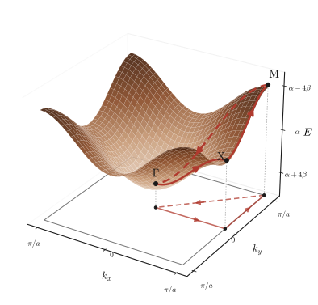
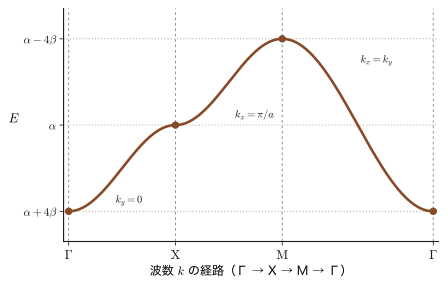
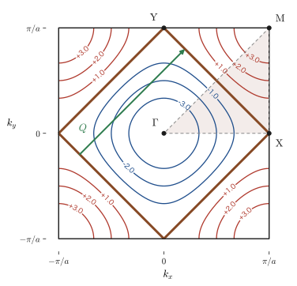
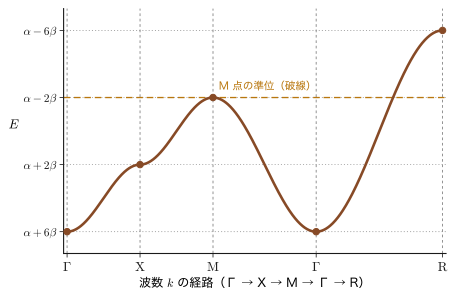
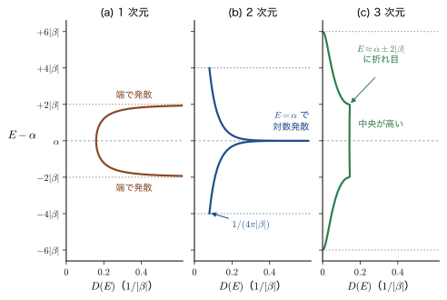
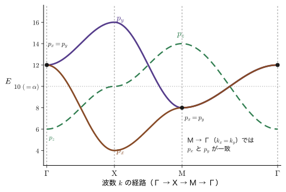
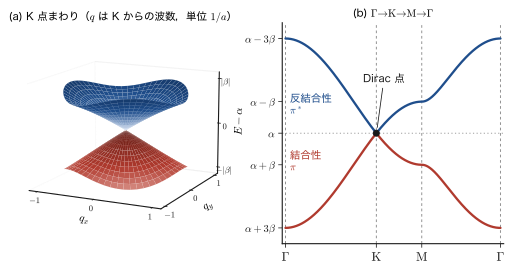

第42章分子軌道から結晶のバンドへ（2）— 2・3 次元格子のバンド図と p 軌道のバンド
前章では，原子を 1 列に並べると，1 個ずつの原子軌道のエネルギー $\alpha$ が幅 $4\abs{\beta}$ の帯（バンド）に広がり，そのエネルギーが波数 $k$ の関数として $E(k)=\alpha+2\beta\cos ka$ と書けることを学んだ（第41章 41.2）．1 次元では，$k$ は 1 個の実数だから，$E(k)$ は 1 本の曲線として描けた．ところが実際の結晶は 2 次元的な層（グラファイトの炭素層，銅酸化物の $\mathrm{CuO_2}$ 面）や 3 次元的な格子（Si，ペロブスカイト酸化物）でできている．2 次元では波数が $\bm{k}=(k_x,k_y)$ の 2 個，3 次元では 3 個の実数になり，$E(\bm{k})$ は曲面や 4 次元空間の超曲面になって，そのままでは絵に描けない．バンド計算の論文で必ず目にする「$\Gamma$–X–M–$\Gamma$」という横軸は，この困難への標準的な解答である．すなわち，対称性の高い特別な点をいくつか選び，それらをつなぐ経路に沿って $E(\bm{k})$ を切り出して 1 本の曲線として描く．この章では，その約束事の意味を，正方格子と単純立方格子の具体例で一から確かめる．
もう 1 つの新しい話題は，軌道の種類である．$s$ 軌道は球対称だから，隣の原子との重なり方は向きによらず 1 種類（$\beta$）しかなかった．$p$ 軌道は向きをもつので，2 つの軌道が結合軸に沿って重なる場合（$\sigma$ 型）と，結合軸に垂直に横並びで重なる場合（$\pi$ 型）とで重なり方が違う．その結果，孤立した原子では 3 重に縮退していた $p_x$，$p_y$，$p_z$ が，結晶の中では 3 本の別々のバンドになり，$\Gamma$ 点では 1 重（$p_z$）と 2 重（$p_x$，$p_y$）に分かれる．縮退が対称性によって解ける，という点で，これは第VIII部で学ぶ配位子場理論の $t_{2g}$ と $e_g$ への分裂と同じ種類の現象である．量子力学の範囲でいえば，正方形の 2 次元の箱の固有状態 $(n_x,n_y)$ と $(n_y,n_x)$ が縮退するのと同じ仕組みである（第10章 10.3）．違いは，電子の波が格子点ごとに符号を変える $e^{i\bm{k}\cdot\bm{R}}$ の形をとり，エネルギーが $\bm{k}$ について周期的になる（バンド幅が有限で，質量が負になる領域がある）ことである．
この章の後半では，バンド図から物性を読む練習をする．状態密度の van Hove 特異点は，2 次元では対数発散，3 次元では折れ目として現れる．「直接遷移か間接遷移か」は，発光素子や太陽電池の材料選びを決める性質であるが，結晶の反転対称性の有無が決め手だと思われがちである．しかしそうではないことを，実際の半導体の例で確かめる．最後に，発展としてハニカム格子を扱い，グラファイトの 1 層（グラフェン）のバンドが，質量ゼロの Dirac 方程式（第XI部）と同じ円錐形になることを見る．
- 1 次元の Bloch 和を正方格子に拡張し，$N^2$ 個の原子軌道の 1 次結合の平均エネルギーから $E(k_x,k_y)=\alpha+2\beta\,(\cos k_xa+\cos k_ya)$ を導くこと（周期境界条件，直交性，位相因子の複素共役の符号）
- 第 1 Brillouin 域，高対称点 $\Gamma$，X，M（3 次元では R も）の位置と，経路 $\Gamma\to\mathrm{X}\to\mathrm{M}\to\Gamma$ を選ぶ理由を説明し，バンド図 $E(\bm{k})$ の曲面から 1 本の曲線を読めること
- 2 次元・3 次元のバンドの高対称点のエネルギーと，バンド幅 $2z\abs{\beta}$（$z$ は最近接原子の数）を求めること．半分詰めの Fermi 面 $\abs{k_x}+\abs{k_y}=\pi/a$ と nesting
- 状態密度の van Hove 特異点：1 次元は端で $1/\sqrt{\ }$ の発散，2 次元は端の階段と鞍点の対数発散，3 次元は端の $\sqrt{\ }$ の立ち上がりと折れ目
- $p$ 軌道の 2 種類の重なり $\beta_\sigma$，$\beta_\pi$ から，$E_{p_x}$，$E_{p_y}$，$E_{p_z}$ の 3 本のバンドを導き，位相の配置（結合と反結合）でバンドの最低点の位置を説明できること
- $\Gamma$ 点での 1 重と 2 重への分裂を，対称性による縮退の解け方として理解し，配位子場理論との対応を述べること
- 直接遷移と間接遷移の違いと，「反転対称性がなければ間接遷移になる」という考えが正しくないことを，反例を挙げて説明すること
- ハニカム格子のバンド $E=\alpha\pm\abs{\beta}\abs{f(\bm{k})}$ と，K 点の Dirac 円錐およびその速度 $v_{\mathrm F}=3\abs{\beta}a_{\mathrm{cc}}/2\hbar$
もとにしたノート：望月泰英『物理学ノート 量子力学』（手書き講義ノート）のうち，LCAO を扱った紙面（正方格子の LCAO 理論，2 次元結晶のバンド図，$p$ 軌道のバンド図）．
42.1 正方格子の LCAO — 2 次元の Bloch 和
42.1.1 復習：1 次元の鎖と Hückel 近似
まず前章の結果を，この章で使う形で復習する．格子定数 $a$ の 1 次元の鎖に $N$ 個の原子が並び，$n$ 番目の原子（位置 $x_n=(n-1)a$）に $s$ 型の原子軌道 $\phi_n(x)$ が付いているとする．結晶の中の 1 個の電子が感じる有効ハミルトニアンを $\hat{H}$ と書く．運動エネルギーと全原子が作るポテンシャルの和であり，他の電子との相互作用は 1 電子の有効ポテンシャルにくりこんだものと考える．電子の波動関数を原子軌道の 1 次結合（LCAO，linear combination of atomic orbitals）で表し，Hückel 近似（第40章）で行列要素を評価する：
- 異なる原子の軌道は直交し，各軌道は規格化されている：$\int\phi_{n'}^*\phi_n\,\dd x=\delta_{n'n}$（重なり積分を無視する）．
- $\int\phi_n^*\hat{H}\phi_n\,\dd x=\alpha$（孤立した原子の準位に近い値），最近接の原子の間では $\int\phi_{n\pm1}^*\hat{H}\phi_n\,\dd x=\beta$，それ以外は $0$ とする．
このとき，位相因子 $e^{i(n-1)ka}$ を付けた和 $\psi_k=\sum_{n=1}^{N}e^{i(n-1)ka}\phi_n$ の平均エネルギーは $E_k=\alpha+2\beta\cos ka$ になる（前章）．ここで $\alpha$，$\beta$ は Hückel 法のパラメータであり，電子のスピン関数（$\alpha=\ket{\uparrow}$，$\beta=\ket{\downarrow}$）とは無関係である．$\beta$ は隣り合う 2 つの軌道が同位相で重なったときの結合の強さで，原子核の引力を受ける領域で軌道が重なると電子のエネルギーが下がるので，$s$ 軌道では $\beta\lt0$ である．すなわち $k=0$（全原子が同位相）が結合性軌道で最低エネルギー $\alpha+2\beta$，$k=\pm\pi/a$（隣と逆位相）が反結合性軌道で最高エネルギー $\alpha-2\beta$ になる．姉妹編の密度汎関数理論（AD 07）や固体物理学（AD 06）では，ホッピング $t=-\beta\gt0$ を使って $E=\alpha-2t\cos ka$ と書く．本書でも，符号の意味が見やすいように，必要に応じて $t=-\beta=\abs{\beta}$ と読み替える．
42.1.2 正方格子と 2 次元の Bloch 和
次に，原子を $x$ 方向と $y$ 方向のどちらにも間隔 $a$ で並べた正方格子を考える．$x$ 方向に $n$ 番目，$y$ 方向に $m$ 番目（$n,m=1,2,\dots,N$）の格子点の位置を $\bm{R}_{nm}=\bigl((n-1)a,\ (m-1)a\bigr)$ と書き，その原子に付いた $s$ 型の原子軌道を $\phi_{nm}(x,y)$ と書く（図42.1）．孤立した原子の $s$ 軌道を $\phi_0(x,y)$（原点に中心をもつ）とすれば，$\phi_{nm}(x,y)=\phi_0\bigl(x-(n-1)a,\ y-(m-1)a\bigr)$，すなわち $\phi_0$ を $\bm{R}_{nm}$ へ平行移動したものである．格子点は全部で $N^2$ 個ある．
波動関数は，1 次元の場合と同じように，各原子軌道に位相因子を掛けて足し合わせて作る．波数 $\bm{k}=(k_x,k_y)$ の状態とは，隣へ進むたびに位相が $k_xa$（$x$ 方向），$k_ya$（$y$ 方向）だけ回る状態のことである：
定義42.1 2 次元の Bloch 和
正方格子の格子点 $(n,m)$ の軌道 $\phi_{nm}$ に位相因子 $e^{i(n-1)k_xa}e^{i(m-1)k_ya}=e^{i\bm{k}\cdot\bm{R}_{nm}}$ を掛けて，全格子点について足した
\begin{equation} \psi_{k_x,k_y}(x,y)=\sum_{m=1}^{N}\sum_{n=1}^{N}e^{i(n-1)k_xa}\,e^{i(m-1)k_ya}\,\phi_{nm}(x,y) \label{eq:42-bloch} \end{equation}を，波数 $\bm{k}=(k_x,k_y)$ の Bloch 和（Bloch sum）という．
ここで用いている位相因子は，格子点ごとに決まる定数（複素数）であり，$x,y$ には依らない．また，式 \eqref{eq:42-bloch} の $\psi_{k_x,k_y}$ は 1 個の電子の波動関数（前章の $\psi_k$ の 2 次元版）である．格子点 $(n,m)$ に局在する原子軌道は $\phi_{nm}$ と書く．
イメージ：Bloch 和は「$e^{i\bm{k}\cdot\bm{r}}$ に格子の周期をもつ関数が掛かった波」である
$\bm{k}$ の許される値は，結晶の端の扱いから決まる．端で電子が反射するように境界条件を課すと，結晶の端の原子だけ隣が少なくなって式が煩雑になる．そこで通常は，$x$ 方向に $N$ 個進むと元の格子点に戻る周期境界条件（Born–von Kármán の境界条件）を課す．$x$ 方向に格子定数 $a$ だけ平行移動すると $n\to n+1$ に進むので，周期境界条件は $\psi(x+Na,y)=\psi(x,y)$ と書け，式 \eqref{eq:42-bloch} では位相因子が 1 周して元に戻る条件 $e^{iNk_xa}=1$，すなわち
\begin{equation} k_x=\frac{2\pi}{a}\cdot\frac{j_x}{N},\qquad k_y=\frac{2\pi}{a}\cdot\frac{j_y}{N}\qquad(j_x,j_y\ \text{は整数}) \label{eq:42-kquant} \end{equation}になる（$k_x=2\pi j_x/(Na)$ なので，1 次元のときの式と同じである．この整数を格子点の番号 $n$，$m$ と区別するために $j_x$，$j_y$ と書いた）．$k_x$ と $k_x+2\pi/a$ は同じ状態を表すから，独立な状態は $-\pi/a\le k_x\lt\pi/a$ の中の $j_x=-N/2,\dots,N/2-1$（$N$ が偶数のとき）の $N$ 個，$y$ 方向も同様に $N$ 個で，全部で $N^2$ 個ある．これは原子軌道の数 $N^2$ と一致する（$N^2$ 個の軌道から作る 1 次結合は $N^2$ 個）．
この $\psi$ は，実際に Bloch の定理を満たす．$x$ 方向へ $a$ だけずらした関数を考えると $\phi_{nm}(x+a,y)=\phi_{n-1,m}(x,y)$ なので，
$$ \psi(x+a,y)=\sum_{m,n}e^{i(n-1)k_xa}e^{i(m-1)k_ya}\phi_{n-1,m}(x,y)=e^{ik_xa}\sum_{m,n}e^{i(n-2)k_xa}e^{i(m-1)k_ya}\phi_{n-1,m}(x,y)=e^{ik_xa}\,\psi(x,y) $$となる．最後の等号では，$n-1$ を新しい和の番号に取り直し，周期境界条件で $n=1$ の項と $n=N+1$ の項を同一視した．同様に $\psi(x,y+a)=e^{ik_ya}\psi(x,y)$ である．一般に，$\psi(\bm{r}+\bm{R})=e^{i\bm{k}\cdot\bm{R}}\psi(\bm{r})$ を満たす関数は $\psi=e^{i\bm{k}\cdot\bm{r}}u(\bm{r})$（$u$ は格子と同じ周期をもつ関数）と書ける．これが Bloch の定理であり，平面波 $e^{i\bm{k}\cdot\bm{r}}$ が原子軌道の周期構造で変調された波になっている．実際，式 \eqref{eq:42-bloch} の各項の位相因子を $e^{i\bm{k}\cdot\bm{R}_{nm}}=e^{i\bm{k}\cdot\bm{r}}\,e^{-i\bm{k}\cdot(\bm{r}-\bm{R}_{nm})}$ と書き直すと，$\psi=e^{i\bm{k}\cdot\bm{r}}u(\bm{r})$，$u(\bm{r})=\sum_{n,m}e^{-i\bm{k}\cdot(\bm{r}-\bm{R}_{nm})}\phi_{nm}(\bm{r})$ となり，$u$ が格子の周期をもつことがわかる．Bloch 和の各項を「平面波と周期的な部分の積」の形 $e^{ik_xx}e^{ik_yy}u(x,y)$ で書き表す流儀もあるが，位相因子を掛けて全格子点について足すという Bloch 和の内容は同じである．固体物理学（AD 06）の第16章 16.2では，並進演算子を使って Bloch の定理を証明している．
42.1.3 平均エネルギーの計算
1 次元のときと同じく，$N^2$ 個の原子からなる系の電子 1 個の平均エネルギーを，波数 $\bm{k}$ の状態について計算する．変分原理（第30章）により，波動関数 $\psi$ の平均エネルギー（エネルギーの期待値）は
\begin{equation} E_{k_x,k_y}=\frac{\displaystyle\iint\psi_{k_x,k_y}^{*}\,\hat{H}\,\psi_{k_x,k_y}\,\dd x\,\dd y}{\displaystyle\iint\psi_{k_x,k_y}^{*}\,\psi_{k_x,k_y}\,\dd x\,\dd y} \label{eq:42-Rayleigh} \end{equation}である．分母は $\psi$ が規格化されていなくてもよいようにするための因子である．以下，積分は全平面についての $\iint\dd x\,\dd y$ とする．積分を $\mel{\psi}{\hat{H}}{\psi}$ のような Dirac 記法でも書くが，ここでは積分の形のまま計算する．以下は 1 電子の有効ハミルトニアンの話で，電子が $N^2$ 個あるときは，Pauli の排他原理により，この準位を下から 2 個ずつ詰める（42.2.4）．
導出：$E_{k_x,k_y}=\alpha+2\beta(\cos k_xa+\cos k_ya)$
第 1 段：分子の中の $\hat{H}\psi$．式 \eqref{eq:42-bloch} の位相因子 $e^{i(n-1)k_xa}e^{i(m-1)k_ya}$ は，$x,y$ を含まない定数である．$\hat{H}$ は $x,y$ についての微分と掛け算からできた線形演算子だから，定数と和は $\hat{H}$ の外に出せて，$\hat{H}$ は $\phi_{nm}$ にだけ作用する：
\begin{equation} \begin{aligned} \hat{H}\psi_{k_x,k_y} &=\hat{H}\sum_{m=1}^{N}\sum_{n=1}^{N}e^{i(n-1)k_xa}\,e^{i(m-1)k_ya}\,\phi_{nm}(x,y) \\ &=\sum_{m=1}^{N}\sum_{n=1}^{N}e^{i(n-1)k_xa}\,e^{i(m-1)k_ya}\,\hat{H}\phi_{nm}(x,y) \end{aligned} \label{eq:42-Hpsi} \end{equation}第 2 段：$\psi^*$．複素共役をとると，和の各項の位相因子は $e^{i\theta}\to e^{-i\theta}$ となり，原子軌道は $\phi_{nm}\to\phi_{nm}^*$ となる．Bloch 和の和の番号を $(n,m)$ と区別して $(n',m')$ とおけば，
\begin{equation} \psi_{k_x,k_y}^{*}=\sum_{m'=1}^{N}\sum_{n'=1}^{N}e^{-i(n'-1)k_xa}\,e^{-i(m'-1)k_ya}\,\phi_{n'm'}^{*}(x,y) \label{eq:42-psistar} \end{equation}である．複素共役の側の位相因子の指数には，マイナス符号が付く．これを忘れて $e^{+i(n'-1)k_xa}$ と書いてしまうと，あとの計算で $e^{ik_xa(n+n'-2)}$ のような和の形が出て，位相が打ち消し合わなくなる．また，$\psi^*\psi$ の 2 重和では，$\psi$ の側の和の番号と $\psi^*$ の側の和の番号を別の文字（$n,m$ と $n',m'$）にしておくことが本質的に重要である．同じ文字を使うと，$n\ne n'$ の項が抜け落ちる．
第 3 段：分母（規格化）．式 \eqref{eq:42-psistar} と $\psi$ の積は，$N^4$ 個の項の和になる：
$$ \psi^{*}_{k_x,k_y}\psi_{k_x,k_y}=\left(\sum_{m'=1}^{N}\sum_{n'=1}^{N}e^{-i(n'-1)k_xa}e^{-i(m'-1)k_ya}\phi_{n'm'}^{*}\right)\left(\sum_{m=1}^{N}\sum_{n=1}^{N}e^{i(n-1)k_xa}e^{i(m-1)k_ya}\phi_{nm}\right) $$各項の積分に，原子軌道の直交規格性（Hückel 近似）を使う．異なる格子点 $(n',m')\ne(n,m)$ の軌道は直交し，同じ格子点のものは規格化されている：
\begin{equation} \iint\phi_{n'm'}^{*}\,\phi_{nm}\,\dd x\,\dd y=\delta_{n'n}\,\delta_{m'm} \label{eq:42-orth} \end{equation}とくに，$m'=m$ を固定して考えると $\iint\phi_{n'm}^*\phi_{nm}\,\dd x\,\dd y=\delta_{n'n}$ であり，$n'=n$ を固定して考えると $\iint\phi_{nm'}^*\phi_{nm}\,\dd x\,\dd y=\delta_{m'm}$ である．式 \eqref{eq:42-orth} を使うと，生き残るのは $(n',m')=(n,m)$ の $N^2$ 個の項で，それぞれの位相因子は $e^{-i(n-1)k_xa}e^{i(n-1)k_xa}=1$ なので，
\begin{equation} \iint\psi_{k_x,k_y}^{*}\psi_{k_x,k_y}\,\dd x\,\dd y=\sum_{m=1}^{N}\sum_{n=1}^{N}1=N^2 \label{eq:42-norm} \end{equation}となる．
第 4 段：分子（Hamiltonian の行列要素）．式 \eqref{eq:42-Hpsi} と式 \eqref{eq:42-psistar} から，分子は
$$ \iint\psi^{*}\hat{H}\psi\,\dd x\,\dd y=\sum_{m',n'}\sum_{m,n}e^{-i(n'-1)k_xa}e^{-i(m'-1)k_ya}\,e^{i(n-1)k_xa}e^{i(m-1)k_ya}\iint\phi_{n'm'}^{*}\hat{H}\phi_{nm}\,\dd x\,\dd y $$である．Hückel 近似の行列要素は，同じ格子点では $\alpha$，$x$ 方向または $y$ 方向に隣り合う格子点の間では $\beta$，それ以外は $0$ である：
\begin{equation} \iint\phi_{n'm'}^{*}\,\hat{H}\,\phi_{nm}\,\dd x\,\dd y=\begin{cases}\alpha & \bigl((n',m')=(n,m)\bigr)\\ \beta & \bigl((n',m')=(n\pm1,m)\ \text{または}\ (n,m\pm1)\bigr)\\ 0 & (\text{上記以外})\end{cases} \label{eq:42-Hmat} \end{equation}そこで，固定した $(n,m)$ について，$(n',m')$ の和をとる．1 次元のときと同じ考え方で，まず $m'=m$ を固定して $x$ 方向の隣だけを見る（$n'=n$ の項と $n'=n\pm1$ の項）．このとき $y$ 方向の位相因子は $e^{-i(m-1)k_ya}e^{i(m-1)k_ya}=1$ で消え，本質的に 1 次元の鎖の計算と同じになる．$x$ 方向の隣 $n'=n\pm1$ では，位相因子が $e^{-i(n\pm1-1)k_xa}e^{i(n-1)k_xa}=e^{\mp ik_xa}$ となり，2 つの隣の和は $\beta\,(e^{ik_xa}+e^{-ik_xa})=2\beta\cos k_xa$ である．次に $n'=n$ を固定して $y$ 方向の隣 $m'=m\pm1$ を見れば，同じ理由で $2\beta\cos k_ya$ が出る．自分自身との項 $(n',m')=(n,m)$ は，位相因子が 1 で $\alpha$ になる．したがって，1 つの $(n,m)$ あたり，
$$ \alpha+\beta\left(e^{ik_xa}+e^{-ik_xa}\right)+\beta\left(e^{ik_ya}+e^{-ik_ya}\right)=\alpha+2\beta\left(\cos k_xa+\cos k_ya\right) $$となり，これが全 $N^2$ 個の $(n,m)$ について同じ値なので，
\begin{equation} \iint\psi_{k_x,k_y}^{*}\,\hat{H}\,\psi_{k_x,k_y}\,\dd x\,\dd y=N^2\left\{\alpha+2\beta\left(\cos k_xa+\cos k_ya\right)\right\} \label{eq:42-num} \end{equation}を得る．ここでは，周期境界条件（$n=N$ の隣が $n=1$）のおかげで，どの格子点も隣が 4 個そろっているとした．端のある有限の格子では，端の原子の隣が少ないぶんだけ補正が加わるが，それは全体の $O(1/N)$ にすぎない．
第 5 段：割り算．式 \eqref{eq:42-num} を式 \eqref{eq:42-norm} で割ると，$N^2$ が約分されて，
$$ E_{k_x,k_y}=\alpha+2\beta\left(\cos k_xa+\cos k_ya\right) $$を得る．
（導出終わり）
定理42.1 正方格子の s バンド
最近接の間の行列要素だけを $\beta$ とした，格子定数 $a$ の正方格子（各格子点に $s$ 軌道 1 個）の LCAO のバンドは，
\begin{equation} E(k_x,k_y)=\alpha+2\beta\left(\cos k_xa+\cos k_ya\right) \label{eq:42-E2d} \end{equation}である．$k_x,k_y$ は式 \eqref{eq:42-kquant} の $N^2$ 個の値をとる．
42.1.4 結果の確認と読み方
考察：$\psi$ は「平均」ではなく厳密な固有関数である
式 \eqref{eq:42-Rayleigh} は，$\psi$ を 1 つの試行関数とみなしたときのエネルギーの平均値（期待値）だった．実は，この $\psi_{k_x,k_y}$ は Hückel 近似の $\hat{H}$ の厳密な固有関数であり，$E_{k_x,k_y}$ は固有値そのものである．確かめよう．$\psi=\sum_{n,m}c_{nm}\phi_{nm}$ の係数は $c_{nm}=e^{i(n-1)k_xa}e^{i(m-1)k_ya}$ である．$\hat{H}\psi$ を $\phi_{nm}$ の 1 次結合で書いたときの $\phi_{nm}$ の係数は，式 \eqref{eq:42-Hmat} により
$$ \alpha c_{nm}+\beta\left(c_{n+1,m}+c_{n-1,m}+c_{n,m+1}+c_{n,m-1}\right) =c_{nm}\left\{\alpha+\beta\left(e^{ik_xa}+e^{-ik_xa}+e^{ik_ya}+e^{-ik_ya}\right)\right\}=E_{k_x,k_y}\,c_{nm} $$となり，すべての $(n,m)$ で $E_{k_x,k_y}c_{nm}$ に一致する．すなわち $\hat{H}\psi=E_{k_x,k_y}\psi$（Hückel 近似の範囲で）が成り立つ．固有関数についての期待値は固有値に等しいから，式 \eqref{eq:42-Rayleigh} の値が固有値になるのは当然である．また，Hückel 近似の $\hat{H}$ は，$x$ 方向の鎖の $\hat{H}$ と $y$ 方向の鎖の $\hat{H}$ の和（$\alpha$ は 1 回だけ数える）だから，$E-\alpha$ が 1 次元の 2 つのバンドの和 $(2\beta\cos k_xa)+(2\beta\cos k_ya)$ になるのは自然である．正方格子の LCAO は，本質的には 1 次元の LCAO の積の形（変数分離）になっている．
数学の道具：和の直交性と行列の対角化
式 \eqref{eq:42-orth} の直交性は，原子軌道が直交するという仮定であり，三角関数の直交性とは別物である．いっぽう，波数 $\bm{k}$ の状態どうしの直交性 $\iint\psi_{\bm{k}'}^*\psi_{\bm{k}}\dd x\dd y=0$（$\bm{k}'\ne\bm{k}$）は，位相因子の和 $\sum_{n=1}^{N}e^{i(k_x-k_x')(n-1)a}=0$（$k_x-k_x'$ が $2\pi/Na$ の 0 でない整数倍のとき，等比数列の和）から出る．これは三角関数の直交性（大学数学 第27章 27.1）の離散版である．また，$N^2\times N^2$ の行列 $H$ の固有値問題が，位相因子を並べたベクトル $c_{nm}$ を使うと 1 行で解けたのは，$H$ が格子の並進で不変だから，並進の固有ベクトル（平面波）が同時に $H$ の固有ベクトルになるためである．一般の行列の対角化は大学数学 第12章 12.3を見よ．
ここで用いた手順（Bloch 和を作り，直交性と最近接の行列要素だけで平均エネルギーを求める）は，任意の格子と軌道に適用できる．一般の強束縛近似の導出は，固体物理学（AD 06）の第18章 18.4にまとめられている．
例題42.1 $4\times4$ の格子の 16 個のエネルギー
周期境界条件をおいた $N=4$（$4\times4=16$ 個の格子点）の正方格子で，$\alpha=0$，$\beta=-1\ \mathrm{eV}$ とする．許される波数 $k_x,k_y$ を求め，16 個のエネルギーとその縮退度を求めよ．
解答 式 \eqref{eq:42-kquant} で $N=4$ とすると，$k_xa=2\pi j_x/4=\pi j_x/2$（$j_x=0,1,2,3$．$j_x=3$ は $-1$ と同じ）である．$y$ 方向も同様．$\cos(\pi j/2)$ の値は，$j=0,1,2,3$ で $1,\,0,\,-1,\,0$ である．エネルギーは $E=\alpha+2\beta(\cos k_xa+\cos k_ya)=-2\,(c_x+c_y)\ \mathrm{eV}$（$c_x=\cos k_xa$，$c_y=\cos k_ya$）．$(c_x,c_y)$ の組の数え上げ：
| $c_x+c_y$ | $(j_x,j_y)$ の組 | $E$ ($\mathrm{eV}$) | 縮退度 |
|---|---|---|---|
| $2$ | $(0,0)$ | $-4$ | 1 |
| $1$ | $(0,1),(0,3),(1,0),(3,0)$ | $-2$ | 4 |
| $0$ | $(1,1),(1,3),(3,1),(3,3),(0,2),(2,0)$ | $0$ | 6 |
| $-1$ | $(1,2),(3,2),(2,1),(2,3)$ | $+2$ | 4 |
| $-2$ | $(2,2)$ | $+4$ | 1 |
縮退度の合計は $1+4+6+4+1=16$ で，格子点の数に一致する．最低準位 $E=-4\ \mathrm{eV}=\alpha+4\beta$ は $\bm{k}=(0,0)$（全格子点が同位相），最高準位 $+4\ \mathrm{eV}=\alpha-4\beta$ は $k_xa=k_ya=\pi$（$(j_x,j_y)=(2,2)$．隣と逆位相の「市松模様」）である．エネルギー幅は $8\ \mathrm{eV}=8\abs{\beta}$ で，$N\to\infty$ の連続バンドの幅と同じである．また，準位が $E=0$（バンドの中央）に多く集まっていることは，42.4 節の状態密度で見るとおりである．
42.2 2 次元結晶のバンド図 — Γ → X → M → Γ の経路
42.2.1 波数の範囲 — 周期性と第 1 Brillouin 域
前節で求めた $E(k_x,k_y)=\alpha+2\beta(\cos k_xa+\cos k_ya)$ は，$\cos$ を含むから $k_x\to k_x+2\pi/a$ でも $k_y\to k_y+2\pi/a$ でも変わらない．これは偶然ではない．位相因子 $e^{i\bm{k}\cdot\bm{R}_{nm}}=e^{i(n-1)k_xa}e^{i(m-1)k_ya}$ は，$k_x$ を $2\pi/a$ だけずらしても $e^{i(n-1)\cdot2\pi}=1$ で変わらないので，$\bm{k}$ と $\bm{k}+(2\pi/a)(g_x,g_y)$（$g_x,g_y$ は整数）は同じ Bloch 和，すなわち同じ状態を表す．そこで，$\bm{k}$ は
$$ -\frac{\pi}{a}\le k_x\lt\frac{\pi}{a},\qquad -\frac{\pi}{a}\le k_y\lt\frac{\pi}{a} $$の正方形の中だけを考えれば十分である．この正方形を，正方格子の第 1 Brillouin 域（first Brillouin zone）という．1 次元では $-\pi/a\le k\lt\pi/a$ の線分だったものの，2 次元版である．一辺の長さは $2\pi/a$ で，この面積 $(2\pi/a)^2$ を，波数の許される値の間隔 $(2\pi/Na)^2$ で割ると $N^2$ となり，前節の状態数と一致する．
42.2.2 対称性から「正の部分だけ」を考えればよい理由 — 既約領域と高対称点
第 1 Brillouin 域の中でも，$E(\bm{k})$ の値は全部を調べる必要はない．$\cos$ が偶関数であることから，
$$ E(-k_x,k_y)=E(k_x,k_y),\qquad E(k_x,-k_y)=E(k_x,k_y),\qquad E(k_y,k_x)=E(k_x,k_y) $$が成り立つ．最初の 2 つは $-\pi/a\le k\le0$ と $0\le k\le\pi/a$ で $E$ が対称になっているということで，正の部分だけを考えれば負の部分は鏡に映したものになる．したがって，$k_x$ と $k_y$ の両方について，$0\le k_x\le\pi/a$，$0\le k_y\le\pi/a$ の正方形（第 1 Brillouin 域の 4 分の 1）を調べれば十分である．3 つ目の式は $x$ と $y$ の入れ替えで $E$ が変わらないという対角線についての鏡映対称性で，正方形の対角線 $k_x=k_y$ の下側の半分だけ，すなわち三角形 $0\le k_y\le k_x\le\pi/a$（第 1 Brillouin 域の 8 分の 1）で十分である．この三角形を既約領域（irreducible wedge）という（図42.2）．
定義42.2 高対称点 $\Gamma$，X，M
正方格子の第 1 Brillouin 域で，
$$ \Gamma=(0,\,0),\qquad \mathrm{X}=\left(\frac{\pi}{a},\,0\right),\qquad \mathrm{M}=\left(\frac{\pi}{a},\,\frac{\pi}{a}\right) $$をそれぞれ $\Gamma$ 点（中心），X 点（辺の中点），M 点（頂点）という．$(0,\pi/a)$ は Y 点とよび，X 点と等価である．
ここでの $\Gamma$ は，波数空間の原点を表す記号である．第VIII部（第45章）で群の既約表現を表す記号 $\Gamma_i$ が出てくるが，それとは別のものである（結晶の対称性を扱う固体物理学では，波数空間の点の記号としてもっぱら $\Gamma$，X，M，R が使われる）．
では，なぜ既約領域のなかを全部走査しないで，三角形の辺に沿った経路 $\Gamma\to\mathrm{X}\to\mathrm{M}\to\Gamma$ だけを調べるのか．それは，この章の $s$ バンドでは，バンドの極値や鞍点が対称性の高い点にしか現れないからである．$E(\bm{k})$ の傾き（勾配）は，$\nabla_{\bm{k}}E=2\beta\,(-a\sin k_xa,\ -a\sin k_ya)$ で，これが零になるのは $\sin k_xa=\sin k_ya=0$，すなわち $k_x,k_y\in\{0,\pi/a\}$ のときだけである．第 1 Brillouin 域の中で，これを満たす点は $\Gamma$，X，Y，M の 4 点だけであり，Y は X と等価だから，独立な停留点は $\Gamma$，X，M の 3 個である．後で見るように，$\Gamma$ が極小（谷底），M が極大（山頂），X が鞍点である．経路 $\Gamma\to\mathrm{X}\to\mathrm{M}\to\Gamma$ は，この 3 つの点をすべて通り，既約領域の 3 辺を 1 周する．これで $E(\bm{k})$ のとりうる値の範囲と，最小値・最大値・鞍点の値が過不足なく読み取れる．ただし，これはこのモデルの性質である．一般の結晶では，Si の伝導帯の底（$\Gamma$–X の線上で，$\Gamma$ から X までの約 0.85 の位置．例題42.11）のように，極値が高対称点の外にも現れるので，実際のバンド計算では対称線に沿った全区間を描く．
42.2.3 曲面から 1 本の曲線へ — バンド図
$\Gamma$，X，M での値を求めよう．$\cos0=1$，$\cos\pi=-1$ だから，
\begin{equation} \begin{aligned} E(\Gamma)&=\alpha+2\beta(1+1)=\alpha+4\beta \\ E(\mathrm{X})&=\alpha+2\beta(-1+1)=\alpha \\ E(\mathrm{M})&=\alpha+2\beta(-1-1)=\alpha-4\beta \end{aligned} \label{eq:42-pts2d} \end{equation}である．$\beta\lt0$ だから，$\Gamma$ が最低（$\alpha+4\beta=\alpha-4\abs{\beta}$），M が最高（$\alpha-4\beta=\alpha+4\abs{\beta}$）で，X はちょうどバンドの中央 $\alpha$ にある．この結果は，図42.3に示すように，$E(k_x,k_y)$ を曲面として描いたときの谷底・山頂・鞍点の高さに対応している．
例42.1 高対称点のエネルギーとバンド幅
$\Gamma$，X，M の $E$ は，$\alpha+4\beta$，$\alpha$，$\alpha-4\beta$ である．たとえば $\abs{\beta}=1\ \mathrm{eV}$ なら，$\alpha$ を基準にして $-4\ \mathrm{eV}$，$0$，$+4\ \mathrm{eV}$ で，バンド幅（最高と最低の差）は $E(\mathrm{M})-E(\Gamma)=-8\beta=8\abs{\beta}=8\ \mathrm{eV}$ である．正方格子では 1 つの原子に最近接の原子が $z=4$ 個あるので，バンド幅は $2z\abs{\beta}$ と書ける（$z=4$ で $8\abs{\beta}$）．1 次元では $z=2$ で幅 $4\abs{\beta}$ だったから，隣の数に比例して広がっている．

このように曲面で描くと $E(\bm{k})$ の全体像はわかるが，どの高さがいくらかを読み取るのは難しく，3 次元になれば描くこと自体ができない．そこで，曲面全体を描く代わりに，赤の経路に沿った断面だけを取り出して，経路に沿った長さを横軸，エネルギーを縦軸にしたグラフを描く．これがバンド図（band diagram）である．経路上のエネルギーは，$k_x,k_y$ の入れ方から次のように求められる．
公式42.1 経路 $\Gamma\to\mathrm{X}\to\mathrm{M}\to\Gamma$ 上の $s$ バンド
波数を $\kappa$（$0\le\kappa\le\pi/a$）で表すと，次のようになる：
\begin{equation} \begin{aligned} \Gamma\to\mathrm{X}\ :\ &\bm{k}=(\kappa,0),\qquad E=\alpha+2\beta\,(\cos\kappa a+1),\\ \mathrm{X}\to\mathrm{M}\ :\ &\bm{k}=(\pi/a,\kappa),\qquad E=\alpha+2\beta\,(\cos\kappa a-1),\\ \mathrm{M}\to\Gamma\ :\ &\bm{k}=(\kappa,\kappa)\ \ (\kappa:\pi/a\to0),\qquad E=\alpha+4\beta\cos\kappa a. \end{aligned} \label{eq:42-path2d} \end{equation}各式は，式 \eqref{eq:42-E2d} に $k_y=0$，$k_x=\pi/a$，$k_x=k_y$ を代入して得られる（最後の式は $2\beta(\cos\kappa a+\cos\kappa a)=4\beta\cos\kappa a$）．経路に沿った距離は，$\Gamma\to\mathrm{X}$ が $\pi/a$，$\mathrm{X}\to\mathrm{M}$ が $\pi/a$，$\mathrm{M}\to\Gamma$ が $\sqrt2\pi/a$ で，バンド図の横軸はこの長さに比例させて描くのが標準である（図42.4）．

図42.4 で X 付近が肩のように平らになっている理由は，式 \eqref{eq:42-path2d} からすぐにわかる．$\Gamma\to\mathrm{X}$ 上では $\mathrm{d}E/\mathrm{d}\kappa=-2\beta a\sin\kappa a$，$\mathrm{X}\to\mathrm{M}$ 上でも同じ形で，$\kappa=\pi/a$ と $\kappa=0$（X の位置）でいずれも $\sin=0$ となる．つまり X の前後で傾きが 0 になる．X では，$E$ は 1 つの方向（$k_x$ 方向）には極大に近く，もう 1 つの方向（$k_y$ 方向）には極小に近い鞍点になっているので，経路に沿って見ると傾きの消える肩になる．
例題42.2 経路上の 5 点ずつの数値表
$\alpha=0$，$\beta=-1\ \mathrm{eV}$ として，$\kappa a=0,\pi/4,\pi/2,3\pi/4,\pi$ の 5 点について，式 \eqref{eq:42-path2d} の 3 つの区間のエネルギーを求めよ．
解答 $\cos\kappa a=1,\ \tfrac{\sqrt2}{2},\ 0,\ -\tfrac{\sqrt2}{2},\ -1$ であり，$2\beta=-2\ \mathrm{eV}$，$4\beta=-4\ \mathrm{eV}$ である．
- $\Gamma\to\mathrm{X}$：$E=-2(\cos\kappa a+1)$：$\kappa a=0$ で $-4$，$\pi/4$ で $-2(1.7071)=-3.414$，$\pi/2$ で $-2$，$3\pi/4$ で $-2(0.2929)=-0.586$，$\pi$ で $0$．
- $\mathrm{X}\to\mathrm{M}$：$E=-2(\cos\kappa a-1)=2(1-\cos\kappa a)$：$0,\ 0.586,\ 2,\ 3.414,\ 4$．
- $\mathrm{M}\to\Gamma$：$E=-4\cos\kappa a$．ただし $\kappa$ は $\pi/a$ から $0$ へ動かすので，$\kappa a=\pi,3\pi/4,\pi/2,\pi/4,0$ の順に $E=+4,\ +2.828,\ 0,\ -2.828,\ -4$．
| 区間 | 始点 | 1/4 | 1/2 | 3/4 | 終点 |
|---|---|---|---|---|---|
| $\Gamma\to\mathrm{X}$ | $-4$ | $-3.414$ | $-2$ | $-0.586$ | $0$ |
| $\mathrm{X}\to\mathrm{M}$ | $0$ | $0.586$ | $2$ | $3.414$ | $4$ |
| $\mathrm{M}\to\Gamma$ | $+4$ | $+2.828$ | $0$ | $-2.828$ | $-4$ |
3 つの区間はどれも単調で，$-4$ から $0$ へ，$0$ から $4$ へ，$4$ から $-4$ へと動く．図42.4 の曲線と一致する．なお，X の前後（$\Gamma\to\mathrm{X}$ の終点の直前 $-0.586$ と $\mathrm{X}\to\mathrm{M}$ の始点の直後 $0.586$）の変化が小さく，肩の平らな部分に対応している．
42.2.4 等エネルギー線・半分詰めの Fermi 面・nesting
曲面の全体像を別の見方でつかむには，地図の等高線のように，$E(k_x,k_y)$ が一定の線を第 1 Brillouin 域の上に描くとよい（図42.5）．$\Gamma$ の近くでは，$E\approx\alpha+4\beta+\abs{\beta}a^2(k_x^2+k_y^2)$ と展開できるので，等エネルギー線は $\Gamma$ を中心とする円（真空中の自由電子と同じ）になる．エネルギーが上がると円は少しずつ四角く（ひし形へ）ゆがんで，$E=\alpha$ で完全なひし形 $\abs{k_x}+\abs{k_y}=\pi/a$ になる．さらに上がると，今度は M（4 つの頂点）を中心とする小さな円になり，最高エネルギー $\alpha-4\beta$ で M の点に縮む．

1 個の原子あたり 1 個の電子があるとしよう（たとえば，各原子から $s$ 電子が 1 個ずつ出ているアルカリ金属の単純化）．バンドの状態数は，スピンを含めて $2N^2$ 個であり，電子は $N^2$ 個なので，バンドはちょうど半分だけ詰まる（半分詰め，half filling）．Pauli の排他原理により，電子は下から順に 2 個ずつ詰まっていき，最後に占有される準位が Fermi エネルギー $E_{\mathrm F}$ である．この $E_{\mathrm F}$ を求めるには，バンドの上下の対称性が役に立つ．$\bm{Q}=(\pi/a,\pi/a)$ だけ波数をずらすと，$\cos(k_xa+\pi)=-\cos k_xa$，$\cos(k_ya+\pi)=-\cos k_ya$ だから，
\begin{equation} E(\bm{k}+\bm{Q})-\alpha=-\bigl(E(\bm{k})-\alpha\bigr) \label{eq:42-nesting} \end{equation}が成り立つ．これは，エネルギー $\alpha+\varepsilon$ の状態と $\alpha-\varepsilon$ の状態が 1 対 1 に対応することを意味する．したがって，$\alpha$ より下の状態の数と上の状態の数は等しく，それぞれ $N^2$ 個（バンドの半分）なので，$N^2$ 個の電子はちょうど $E_{\mathrm F}=\alpha$ までを占有する．Fermi 面（Fermi エネルギーでの等エネルギー線）は，$E=\alpha$ すなわち $\cos k_xa+\cos k_ya=0$ である．$\cos k_ya=-\cos k_xa=\cos(\pi-k_xa)$ より $k_ya=\pm(\pi-k_xa)$（$2\pi$ の整数倍を除く）で，第 1 Brillouin 域の中では
\begin{equation} \abs{k_x}+\abs{k_y}=\frac{\pi}{a} \label{eq:42-FS} \end{equation}となる．これが図42.5 の褐色のひし形である．
考察：nesting — Fermi 面が平行移動で自分に重なる
式 \eqref{eq:42-nesting} により，$E(\bm{k})=\alpha$ を満たす $\bm{k}$ に $\bm{Q}$ を加えると，やはり $E=\alpha$ を満たす．すなわち，ひし形の Fermi 面は，$\bm{Q}=(\pi/a,\pi/a)$ の平行移動でひし形自身に重なる（図42.5 の緑の矢印は，Fermi 面上の点 $(-0.8,-0.2)\pi/a$ を，やはり Fermi 面上の点 $(0.2,0.8)\pi/a$ へ移す）．このように，同じ波数ベクトル $\bm{Q}$ で Fermi 面の全体がぴったり重なる状況を nesting（入れ子）という．この状況では，波数 $\bm{k}$ の状態と $\bm{k}+\bm{Q}$ の状態のエネルギーが，Fermi 面の上でともに $\alpha$ で等しいので，どんなに小さな相互作用でもその 2 つの状態を混ぜて，Fermi 面にギャップを開けたり（Peierls 転移．1 次元の鎖の場合は第41章 41.9），スピンの向きが隣と反対になる反強磁性の秩序（スピン密度波）を作ったりする方が，エネルギーが下がる．正方格子の Hubbard 模型（第59章）で，半分詰めの状態が反強磁性の絶縁体になりやすいことの出発点が，この nesting である．また，この $\bm{Q}$ が M 点の波数と一致することは，章末の演習42.6 のように，2 種類の原子が市松模様に並ぶ格子で，ちょうど $\bm{k}$ と $\bm{k}+\bm{Q}$ が混ざってギャップが開くことに対応している．
群速度と有効質量
バンドの傾きと曲率から，結晶の中の電子の動きがわかる．波束の中心の速さ（群速度）は $\bm{v}=\dfrac{1}{\hbar}\nabla_{\bm{k}}E$ で，1 次元の式 $v=\hbar^{-1}\mathrm{d}E/\mathrm{d}k$（第41章 41.6）の 2 次元版である．また，バンドの曲率から，$\dfrac{1}{m^*_{ij}}=\dfrac{1}{\hbar^2}\dfrac{\partial^2E}{\partial k_i\partial k_j}$ で有効質量が決まる（同じく前章）．$E=\alpha-2\abs{\beta}(\cos k_xa+\cos k_ya)$ の場合，
\begin{equation} \bm{v}=\frac{2\abs{\beta}a}{\hbar}\,\bigl(\sin k_xa,\ \sin k_ya\bigr),\qquad \frac{\partial^2E}{\partial k_x^2}=2\abs{\beta}a^2\cos k_xa,\quad \frac{\partial^2E}{\partial k_y^2}=2\abs{\beta}a^2\cos k_ya,\quad\frac{\partial^2E}{\partial k_x\partial k_y}=0 \label{eq:42-velmass} \end{equation}である．有効質量の対角成分は，$\Gamma$ では $\cos=1$ で $m^*=\hbar^2/(2\abs{\beta}a^2)\gt0$（$x$ と $y$ で等しい，等方的），M では $\cos=-1$ で $m^*=-\hbar^2/(2\abs{\beta}a^2)\lt0$（負の質量．外力を受けると力と反対の向きに加速される．電子が詰まっていないバンドの頂上付近の状態が正孔のように振る舞うことに対応する），X では $x$ 方向が $m_x^*\lt0$，$y$ 方向が $m_y^*\gt0$ と符号が逆になる．鞍点の性質が，質量の符号の違いとして現れる．
例題42.3 Fermi 面上の電子の速さ
正方格子の $s$ バンドが半分詰めのとき，$\bm{k}=(\pi/2a,\pi/2a)$ の状態の群速度 $\bm{v}$ とその大きさを求めよ．$\abs{\beta}=1.0\ \mathrm{eV}$，$a=2.5\ \text{Å}$ とせよ．
解答 まず，この点が Fermi 面上にあることを確かめる．$\abs{k_x}+\abs{k_y}=\pi/2a+\pi/2a=\pi/a$ で，式 \eqref{eq:42-FS} を満たす．式 \eqref{eq:42-velmass} に $\sin(\pi/2)=1$ を代入して，
$$ \bm{v}=\frac{2\abs{\beta}a}{\hbar}(1,1),\qquad \abs{\bm{v}}=\sqrt2\,\frac{2\abs{\beta}a}{\hbar} $$である．数値は $\hbar=6.582\times10^{-16}\ \mathrm{eV\,s}$，$a=2.5\times10^{-10}\ \mathrm{m}$ を使って，
$$ \frac{2\abs{\beta}a}{\hbar}=\frac{2\times1.0\ \mathrm{eV}\times2.5\times10^{-10}\ \mathrm{m}}{6.582\times10^{-16}\ \mathrm{eV\,s}}=7.60\times10^{5}\ \mathrm{m/s},\qquad \abs{\bm{v}}=\sqrt2\times7.60\times10^{5}\ \mathrm{m/s}=1.07\times10^{6}\ \mathrm{m/s} $$である．向きは $(1,1)$，すなわち Fermi 面（ひし形の 1 辺 $k_x+k_y=\pi/a$）に垂直で外向きである（等エネルギー線に垂直に $E$ が増える向き）．光速の約 $0.4\%$ で，金属の Fermi 速度（$10^6\ \mathrm{m/s}$ 程度）と同じ桁である．なお，$\abs{\bm{v}}$ は $\sin^2k_xa+\sin^2k_ya$ が最大になるこの点（第 1 Brillouin 域の中で最大）で最も大きい．
例題42.4 バンドの底の有効質量
$\abs{\beta}=1.0\ \mathrm{eV}$，$a=2.5\ \text{Å}$ の正方格子の $s$ バンドで，$\Gamma$ 点の有効質量 $m^*$ を電子の質量 $m_{\mathrm e}$ の何倍か求めよ．また，同じパラメータで $a$ を 20% 縮める（$\beta$ は一定とする）と $m^*$ はどう変わるか．
解答 式 \eqref{eq:42-velmass} から $\partial^2E/\partial k_x^2=2\abs{\beta}a^2$ なので $m^*=\hbar^2/(2\abs{\beta}a^2)$．自由電子の質量を使うと $m^*/m_{\mathrm e}=\dfrac{\hbar^2}{2m_{\mathrm e}}\cdot\dfrac{1}{\abs{\beta}a^2}$ で，$\hbar^2/(2m_{\mathrm e})=3.810\ \mathrm{eV\,\text{Å}^2}$ を使うと，
$$ \frac{m^*}{m_{\mathrm e}}=\frac{3.810\ \mathrm{eV\,\text{Å}^2}}{1.0\ \mathrm{eV}\times(2.5\ \text{Å})^2}=\frac{3.810}{6.25}=0.61 $$である．$a$ を 20% 縮める（$a=2.0\ \text{Å}$）と，$m^*/m_{\mathrm e}=3.810/4.0=0.95$ と重くなる（$m^*\propto a^{-2}$）．ただし，実際の物質では原子間隔が縮むと軌道の重なりが増えて $\abs{\beta}$ が急激に大きくなるので，$m^*$ は逆に軽くなる（バンド幅が広がる）ことが多い．
関連シミュレーター：分子軌道からバンドへのタブ「⑤ 2次元正方格子（s・p・d・f）」で，本節のバンド図と，経路上の位置に対応した実空間の位相の並びを見ることができる．
42.3 3 次元結晶のバンド — 単純立方格子
42.3.1 3 次元への拡張 — 単純立方格子
原子が 3 方向すべてに間隔 $a$ で並んだ単純立方格子（simple cubic lattice）を考える．格子点を $\bm{R}_{nml}=\bigl((n-1)a,(m-1)a,(l-1)a\bigr)$（$n,m,l=1,\dots,N$，全部で $N^3$ 個）とし，各格子点に $s$ 型の原子軌道 $\phi_{nml}$ を付ける．2 次元とまったく同じ流れで計算できる．違いは，和の番号が 3 つになることと，最近接の原子が $\pm x$，$\pm y$，$\pm z$ の 6 個（配位数 $z=6$）になることだけである．
導出：単純立方格子の $s$ バンド
Bloch 和を $\psi_{\bm{k}}=\sum_{n,m,l=1}^{N}e^{i(n-1)k_xa}e^{i(m-1)k_ya}e^{i(l-1)k_za}\phi_{nml}$ とおく．周期境界条件から $k_x,k_y,k_z\in\dfrac{2\pi}{Na}\times(\text{整数})$ である．Hückel 近似（直交性と最近接の行列要素）を
$$ \iiint\phi_{n'm'l'}^*\phi_{nml}\,\dd x\dd y\dd z=\delta_{n'n}\delta_{m'm}\delta_{l'l},\qquad \iiint\phi_{n'm'l'}^*\hat{H}\phi_{nml}\,\dd x\dd y\dd z=\begin{cases}\alpha&(\text{同じ格子点})\\ \beta&(\text{最近接の 6 個})\\ 0&(\text{それ以外})\end{cases} $$とする．規格化積分は，2 次元と同じく一致する項だけが残って $\iiint\psi^*\psi=N^3$．エネルギーの分子は，各格子点 $(n,m,l)$ について，自分自身が $\alpha$，$\pm x$ の隣が $\beta(e^{ik_xa}+e^{-ik_xa})=2\beta\cos k_xa$，$\pm y$ の隣が $2\beta\cos k_ya$，$\pm z$ の隣が $2\beta\cos k_za$ を与え，$N^3$ 個の格子点について同じなので $N^3\{\alpha+2\beta(\cos k_xa+\cos k_ya+\cos k_za)\}$．これを $N^3$ で割ればよい．
（導出終わり）
定理42.2 単純立方格子の $s$ バンド
\begin{equation} E(k_x,k_y,k_z)=\alpha+2\beta\left(\cos k_xa+\cos k_ya+\cos k_za\right) \label{eq:42-E3d} \end{equation}$1$ 次元（$\cos$ 1 個），2 次元（2 個），3 次元（3 個）と，次元が 1 つ増えるごとに $2\beta\cos k_ja$ の項が 1 つずつ増えるだけの単純な規則である．$d$ 次元の超立方格子でも $E=\alpha+2\beta\sum_{j=1}^{d}\cos k_ja$ で，最低エネルギーは $\Gamma$ で $\alpha+2d\beta$，最高エネルギーは各成分が $\pi/a$ の点で $\alpha-2d\beta$ だから，バンド幅は $4d\abs{\beta}$ で，配位数 $z=2d$ を使えば $2z\abs{\beta}$ である．
42.3.2 3 次元の高対称点とバンド図
3 次元の第 1 Brillouin 域は，一辺 $2\pi/a$ の立方体 $-\pi/a\le k_x,k_y,k_z\lt\pi/a$ である．2 次元の $\Gamma$，X，M に，立方体の頂点 R を加えた 4 点が高対称点になる（図42.6）：
$$ \Gamma=(0,0,0),\quad \mathrm{X}=\left(\frac{\pi}{a},0,0\right),\quad \mathrm{M}=\left(\frac{\pi}{a},\frac{\pi}{a},0\right),\quad \mathrm{R}=\left(\frac{\pi}{a},\frac{\pi}{a},\frac{\pi}{a}\right) $$すなわち，$\Gamma$ が立方体の中心，X が面の中心，M が辺の中点，R が頂点である．各成分が $0$ か $\pi/a$ かのどちらかであるという点で，2 次元の $\Gamma$，X，M と同じ流れであり，$\pi/a$ になる成分の数が 0，1，2，3 個である点が $\Gamma$，X，M，R に対応する．
式 \eqref{eq:42-E3d} に代入すると，各点のエネルギーは，$\cos$ が $+1$ か $-1$ のどちらかなので，
\begin{equation} \begin{aligned} E(\Gamma)&=\alpha+6\beta,\qquad E(\mathrm{X})=\alpha+2\beta(-1+1+1)=\alpha+2\beta,\\ E(\mathrm{M})&=\alpha+2\beta(-1-1+1)=\alpha-2\beta,\qquad E(\mathrm{R})=\alpha+2\beta(-1-1-1)=\alpha-6\beta \end{aligned} \label{eq:42-pts3d} \end{equation}である（$\beta\lt0$ なので，$\Gamma$ が最低，R が最高）．経路上の式は，2 次元と同様に $k_x,k_y,k_z$ を経路に沿って代入して得られる．
公式42.2 経路 $\Gamma\to\mathrm{X}\to\mathrm{M}\to\Gamma\to\mathrm{R}$ 上の $s$ バンド
$0\le\kappa\le\pi/a$ として，
\begin{equation} \begin{aligned} \Gamma\to\mathrm{X}\ :\ &\bm{k}=(\kappa,0,0),\qquad E=\alpha+2\beta\,(\cos\kappa a+2),\\ \mathrm{X}\to\mathrm{M}\ :\ &\bm{k}=(\pi/a,\kappa,0),\qquad E=\alpha+2\beta\cos\kappa a,\\ \mathrm{M}\to\Gamma\ :\ &\bm{k}=(\kappa,\kappa,0)\ \ (\kappa:\pi/a\to0),\qquad E=\alpha+2\beta\,(2\cos\kappa a+1),\\ \Gamma\to\mathrm{R}\ :\ &\bm{k}=(\kappa,\kappa,\kappa),\qquad E=\alpha+6\beta\cos\kappa a. \end{aligned} \label{eq:42-path3d} \end{equation}
2 次元のバンド図（図42.4）との違いは，M より上に，さらに $\Gamma\to\mathrm{R}$ の区間が加わって，バンドの上端 $\alpha-6\beta$ まで続くことである．2 次元では M がすでに最高点だったが，3 次元では 3 方向すべてで反結合的になる R が最高点になり，M は途中の山にすぎない．また，$\Gamma\to\mathrm{X}\to\mathrm{M}\to\Gamma$ の範囲では，バンドの底 $\alpha+6\beta$ から $\alpha-2\beta$ までの幅 $8\abs{\beta}$ しか現れず，上端側の $4\abs{\beta}$（$\alpha-2\beta$ から $\alpha-6\beta$ まで）は $\Gamma\to\mathrm{R}$ を加えて初めて見える．どの経路にどの範囲の準位が現れるかを意識して，バンド図を読むとよい．
例42.2 単純立方格子の高対称点
$\Gamma$，X，M，R での $s$ バンドのエネルギーは，$\alpha+6\beta$，$\alpha+2\beta$，$\alpha-2\beta$，$\alpha-6\beta$ である（式 \eqref{eq:42-pts3d}）．バンド幅は $E(\mathrm{R})-E(\Gamma)=-12\beta=12\abs{\beta}$ で，$2z\abs{\beta}$（$z=6$）に等しい．エネルギーは，バンドの底から上へ $4\abs{\beta}$ ずつ，等間隔に，$\Gamma$，X，M，R の順に並ぶ（$\alpha+6\beta\to\alpha+2\beta\to\alpha-2\beta\to\alpha-6\beta$）．
例題42.5 単純立方格子の $s$ バンドの数値
$\alpha=0$，$\beta=-0.5\ \mathrm{eV}$，$a=3.0\ \text{Å}$ の単純立方格子について，(1) $\Gamma$，X，M，R でのエネルギーとバンド幅，(2) $\Gamma\to\mathrm{R}$ の中点 $\bm{k}=(\pi/2a)(1,1,1)$ でのエネルギーと群速度の大きさを求めよ．
解答 (1) 式 \eqref{eq:42-pts3d} より $E(\Gamma)=6\beta=-3.0\ \mathrm{eV}$，$E(\mathrm{X})=2\beta=-1.0\ \mathrm{eV}$，$E(\mathrm{M})=-2\beta=+1.0\ \mathrm{eV}$，$E(\mathrm{R})=-6\beta=+3.0\ \mathrm{eV}$．バンド幅は $12\abs{\beta}=6.0\ \mathrm{eV}$．
(2) 式 \eqref{eq:42-path3d} の $\Gamma\to\mathrm{R}$ で $\kappa a=\pi/2$ とすると，$E=\alpha+6\beta\cos(\pi/2)=0$，すなわちバンドの中央 $\alpha$ である．群速度は $\bm{v}=\hbar^{-1}\nabla_{\bm{k}}E=\dfrac{2\abs{\beta}a}{\hbar}(\sin k_xa,\sin k_ya,\sin k_za)$ で，$\sin(\pi/2)=1$ より $\abs{\bm{v}}=\sqrt3\,\dfrac{2\abs{\beta}a}{\hbar}$．数値は
$$ \frac{2\abs{\beta}a}{\hbar}=\frac{2\times0.5\ \mathrm{eV}\times3.0\times10^{-10}\ \mathrm{m}}{6.582\times10^{-16}\ \mathrm{eV\,s}}=4.56\times10^{5}\ \mathrm{m/s},\qquad \abs{\bm{v}}=\sqrt3\times4.56\times10^{5}=7.9\times10^{5}\ \mathrm{m/s} $$である．
42.3.3 バンド幅と格子の種類 — fcc と bcc
実際の金属の多くは，単純立方格子ではなく，面心立方格子（fcc）や体心立方格子（bcc）をとる．単純立方格子は，元素の単体では常圧で $\alpha$-Po（ポロニウム）だけが取る珍しい構造である．それでも本節の計算は，他の格子でも同じ方法で進められる．立方格子の定数を $a$ とすると，最近接の原子への位置ベクトル $\bm{\delta}$ の集合は，fcc では $(\pm\tfrac a2,\pm\tfrac a2,0)$，$(\pm\tfrac a2,0,\pm\tfrac a2)$，$(0,\pm\tfrac a2,\pm\tfrac a2)$ の 12 個，bcc では $(\pm\tfrac a2,\pm\tfrac a2,\pm\tfrac a2)$ の 8 個である．最近接の行列要素をすべて $\beta$ とすると，Bloch 和の平均エネルギーは $E=\alpha+\beta\sum_{\bm{\delta}}e^{i\bm{k}\cdot\bm{\delta}}$ となる．たとえば bcc では，8 個の項を $\pm$ の符号で組にすると $\sum_{\bm{\delta}}e^{i\bm{k}\cdot\bm{\delta}}=8\cos\tfrac{k_xa}{2}\cos\tfrac{k_ya}{2}\cos\tfrac{k_za}{2}$ となる．fcc も同様に，$xy$ 面内の 4 個の隣が $4\cos\tfrac{k_xa}{2}\cos\tfrac{k_ya}{2}$ になることから，次のようになる：
\begin{equation} E_{\mathrm{fcc}}=\alpha+4\beta\left[\cos\tfrac{k_xa}{2}\cos\tfrac{k_ya}{2}+\cos\tfrac{k_ya}{2}\cos\tfrac{k_za}{2}+\cos\tfrac{k_za}{2}\cos\tfrac{k_xa}{2}\right],\qquad E_{\mathrm{bcc}}=\alpha+8\beta\cos\tfrac{k_xa}{2}\cos\tfrac{k_ya}{2}\cos\tfrac{k_za}{2} \label{eq:42-fccbcc} \end{equation}bcc のバンドは $\alpha\pm8\abs{\beta}$ の範囲で，幅 $16\abs{\beta}=2z\abs{\beta}$（$z=8$）である．いっぽう fcc では，$c_j=\cos(k_ja/2)$ とおくと $E=\alpha+4\beta\,(c_1c_2+c_2c_3+c_3c_1)$ で，括弧の中は各 $c_j$ について 1 次式だから，最大・最小は $c_j=\pm1$ の頂点でとる．頂点での値は，3 個の符号が同じなら $3$，2 個と 1 個に分かれるなら $-1$ の 2 通りだけである．したがって括弧の中は $-1$ から $3$ までで，バンドは $\alpha+12\beta$（$\Gamma$ で最低）から $\alpha-4\beta$（$(2\pi/a,0,0)$ で最高）までとなり，幅は $16\abs{\beta}$ と $2z\abs{\beta}=24\abs{\beta}$ より狭く，上下非対称になる．単純立方や bcc，2 次元の正方格子は，格子点を 2 種類（A と B）に色分けして最近接がすべて異なる色になるようにできる（2 部格子，bipartite lattice）ので，バンドが $\alpha$ に対して上下対称である（式 \eqref{eq:42-nesting} と同じ理由．A と B で位相を逆にすればよい）．fcc は三角形（3 個の原子が互いに最近接）を含むため 2 色に塗り分けられず，上下対称にならない．
分子から固体へ準位が帯になる様子と，イオン結晶（NaCl など）での価電子帯・伝導帯の由来は，マテリアル計算科学（AD 05）の第14章 14.1でも扱われる．
応用：バンド幅と物性 — 遷移金属酸化物の $d$ バンド
バンド幅 $2z\abs{\beta}$ は，重なり（$\beta$）と配位数（$z$）で決まる．重なりが大きく，隣の数が多い物質ほどバンドが広く，電子が結晶の中を動きやすい．逆に，遷移金属酸化物の $d$ 軌道は酸素の $p$ 軌道を介してしか隣の金属の $d$ 軌道とつながらないため重なりが小さく，$d$ バンドは数 eV 程度と狭い．狭いバンドでは，同じ軌道に 2 個の電子がいるときの反発（Hubbard の $U$，第59章）がバンド幅より大きくなり，バンド理論が予言する金属が絶縁体になる（Mott 絶縁体）．バンド幅は，物質が金属になるか絶縁体になるかの分かれ目を決める量である．
42.4 2 次元・3 次元の状態密度 — van Hove 特異点
42.4.1 状態密度の $d$ 次元への拡張と 1 次元の復習
バンドのエネルギー $E(\bm{k})$ が決まると，「エネルギーがある値の付近に，準位がどれだけ密に並んでいるか」が問題になる．これが状態密度（density of states）で，1 次元鎖の場合は第41章 41.4の定義41.3 で導入した．前章の 1 次元鎖では，準位がバンドの両端に密集し，中央では疎になっていた．ここでは，その定義を $d$ 次元に拡張して，次元を上げるとそれがどう変わるかを調べる．記号は前章と同じ $D(E)$ を使う（自由電子の状態密度を扱った第10章では $g(E)$ と書いた）．
定義42.3 $d$ 次元の状態密度（定義41.3 の拡張）
原子 1 個あたり・スピン 1 種類あたりの状態密度 $D(E)$ を，エネルギーが $E$ から $E+\dd E$ の間にある状態の数の割合が $D(E)\,\dd E$ となるように定める：
\begin{equation} D(E)=\frac{1}{N_{\mathrm{site}}}\sum_{\bm{k}}\delta\bigl(E-E(\bm{k})\bigr)=\left(\frac{a}{2\pi}\right)^{d}\int_{\mathrm{BZ}}\delta\bigl(E-E(\bm{k})\bigr)\,\dd^{d}k,\qquad \int D(E)\,\dd E=1 \label{eq:42-dos} \end{equation}ここで $N_{\mathrm{site}}=N^d$ は原子の数，$d$ は次元，$\delta$ は Dirac のデルタ関数である．2 つ目の等号では，許される $\bm{k}$ が体積 $(2\pi/Na)^d$ あたり 1 個の密度で分布するので，和を $\sum_{\bm{k}}\to(Na/2\pi)^d\int\dd^dk$ で積分に置き換えた．スピンを考えるときは全状態密度が $2D(E)$ である．
3 次元の自由電子の状態密度 $D(E)\propto\sqrt{E}$ は，大学基礎物理学（AD 03）の第52章 52.8で導いた．ここではバンド $E(\bm{k})$ が $\cos$ の形なので，$\bm{k}$ 空間で「等エネルギー面の面積」が決める密度を，次元ごとに見ていく．
1 次元の $E=\alpha-2\abs{\beta}\cos ka$（$\beta\lt0$ を $-\abs{\beta}$ と書いたもの）では，式 \eqref{eq:42-dos} の積分は，前章で導いた $D(E)=\dfrac{a}{\pi}\dfrac{1}{\abs{\mathrm{d}E/\mathrm{d}k}}$（第41章 41.4.1 節で，デルタ関数の合成の公式から導いた結果）から，
\begin{equation} D_{1}(E)=\frac{1}{\pi\sqrt{4\beta^2-(E-\alpha)^2}}\qquad(\abs{E-\alpha}\lt2\abs{\beta}) \label{eq:42-g1} \end{equation}である．バンドの端 $E\to\alpha\mp2\abs{\beta}$ で $D_{1}\to\infty$（$\propto1/\sqrt{\text{端からの距離}}$）となる．これは，端では $E(k)$ の傾きが 0 になり，同じ $\dd E$ の間に入る $k$ の範囲が広がるからである．2 次元・3 次元では，$\abs{\mathrm{d}E/\mathrm{d}k}$ が 0 になる点が $\bm{k}$ 空間の点（鞍点など）として現れ，次項以降で見るように，端の発散のほかに，中央の対数発散などの特異性が生じる．
状態密度は，密度汎関数理論（AD 07）の第13章でも中心的な量として扱われる．
42.4.2 2 次元の状態密度と van Hove 特異点
2 次元の正方格子では，$E-\alpha=\varepsilon_x+\varepsilon_y$，$\varepsilon_x=2\beta\cos k_xa$，$\varepsilon_y=2\beta\cos k_ya$ と書ける．$k_x$ と $k_y$ は独立だから，状態密度は 1 次元の状態密度 $D_{1}$ の畳み込みである：
$$ D_{2}(E)=\int\dd\varepsilon\ D_{1}(\varepsilon)\,D_{1}(E-\alpha-\varepsilon)=\frac{1}{\pi^2}\int\frac{\dd\varepsilon}{\sqrt{(4\beta^2-\varepsilon^2)\,\bigl(4\beta^2-(E-\alpha-\varepsilon)^2\bigr)}} $$この積分は第 1 種完全楕円積分になり，結果は次のとおりである：
\begin{equation} D_{2}(E)=\frac{1}{2\pi^2\abs{\beta}}\,K(m),\qquad m=1-\left(\frac{E-\alpha}{4\beta}\right)^2,\qquad K(m)=\int_0^{\pi/2}\frac{\dd\theta}{\sqrt{1-m\sin^2\theta}} \label{eq:42-g2} \end{equation}$K(m)$ は第 1 種完全楕円積分で，$m$ はその母数である（格子点の番号 $m$ や経路に沿った波数 $\kappa$ とは別の量．数値計算ライブラリ scipy の ellipk の引数と同じ $m$ である）．$K(m)$ は $m=0$ で $\pi/2$ となり，$m\to1$ で対数発散する．この畳み込みの厳密な評価は本書の範囲を越えるので，式 \eqref{eq:42-g2} の正しさは，次の確かめで納得しておこう．定義42.3 の規格化 $\int D_{2}\,\dd E=1$ を満たし，下の 2 つの極限（端の階段と，中央の対数発散）は，次の導出のように $\bm{k}$ 空間での展開から別に求めた結果と一致する．重要な特徴が 2 つある．
- バンドの端は階段：$E\to\alpha\mp4\abs{\beta}$ で $m\to0$，$K\to\pi/2$ だから，$D_{2}\to\dfrac{1}{4\pi\abs{\beta}}$ の有限の値で立ち上がる．自由電子の 2 次元系の状態密度が定数であること（次の例題42.6）に対応する．
- バンドの中央で対数発散：$E\to\alpha$ で $m\to1$ となり，$K(m)\to\ln\dfrac{4}{\sqrt{1-m}}$ だから，$D_{2}\simeq\dfrac{1}{2\pi^2\abs{\beta}}\ln\dfrac{16\abs{\beta}}{\abs{E-\alpha}}$ で無限大に発散する．
この発散は，X 点と Y 点の鞍点から来る．次の導出でこれを直接確かめよう．
導出：鞍点の近くの状態密度と対数発散
X 点 $(\pi/a,0)$ の近傍で $k_x=\pi/a+q$，$k_y$ が小さいとして展開する．$\cos(\pi+qa)=-\cos qa\approx-1+q^2a^2/2$，$\cos k_ya\approx1-k_y^2a^2/2$ を式 \eqref{eq:42-E2d} に代入すると，
$$ E-\alpha\approx2\beta\left(-1+\frac{q^2a^2}{2}+1-\frac{k_y^2a^2}{2}\right)=\beta a^2\,(q^2-k_y^2)=c\,(k_y^2-q^2),\qquad c\equiv\abs{\beta}a^2 $$となり，$q$ 方向（$\Gamma$–X の方向）には極大，$k_y$ 方向には極小になる鞍点である．$\varepsilon=E-\alpha\gt0$ のときのこの近傍の寄与を，$\abs{q},\abs{k_y}\lt\Lambda$ の範囲で求める：
$$ G(\varepsilon)=\iint\delta\bigl(\varepsilon-c(k_y^2-q^2)\bigr)\dd q\,\dd k_y $$$q$ を固定して $k_y$ で積分すると，$k_y^2=\varepsilon/c+q^2$ から $k_y=\pm\sqrt{\varepsilon/c+q^2}$ の 2 個の根があり，デルタ関数から $1/(2c\abs{k_y})$ が各根で出るので，
$$ G(\varepsilon)=\int_{-\Lambda}^{\Lambda}\dd q\ \frac{2}{2c\sqrt{\varepsilon/c+q^2}}=\frac{2}{c}\sinh^{-1}\!\left(\Lambda\sqrt{\frac{c}{\varepsilon}}\right)\simeq\frac{1}{c}\ln\frac{4\Lambda^2c}{\varepsilon}\qquad(\varepsilon\ll c\Lambda^2) $$となる（大きな $x$ で $\sinh^{-1}x\approx\ln2x$）．$\varepsilon\to0$ で $\ln(1/\varepsilon)$ が発散する．鞍点は X と Y の 2 個あるので，式 \eqref{eq:42-dos} の係数 $(a/2\pi)^2$ を掛けて足すと，
$$ D_{2}\simeq\left(\frac{a}{2\pi}\right)^2\cdot2\cdot\frac{1}{\abs{\beta}a^2}\ln\frac{1}{\abs{\varepsilon}}=\frac{1}{2\pi^2\abs{\beta}}\ln\frac{1}{\abs{\varepsilon}} $$で，これは厳密な式 \eqref{eq:42-g2} の $E\to\alpha$ での係数 $1/(2\pi^2\abs{\beta})$ と一致する．$\varepsilon\lt0$ でも $q\leftrightarrow k_y$ の入れ替えで同じ形になる．
（導出終わり）
例題42.6 2 次元のバンドの底の状態密度と自由電子
正方格子の $s$ バンドの底（$\Gamma$ 付近）の状態密度 $D_{2}=1/(4\pi\abs{\beta})$ が，有効質量 $m^*=\hbar^2/(2\abs{\beta}a^2)$ の 2 次元自由電子の状態密度と一致することを示せ．$\abs{\beta}=1.0\ \mathrm{eV}$，$a=2.5\ \text{Å}$ で，スピン 1 種類・面積あたりの値を求めよ．
解答 $\Gamma$ 付近では $E\approx E_0+\hbar^2k^2/2m^*$（$k=\abs{\bm{k}}$）である．面積 $A$ の中の $\bm{k}$ の数は，$k$ 空間の体積 $\pi k^2$ を 1 状態あたりの体積 $(2\pi)^2/A$ で割って $A\pi k^2/(4\pi^2)=Ak^2/(4\pi)$（スピン 1 種類）．$E-E_0=\hbar^2k^2/2m^*$ より $k^2=2m^*(E-E_0)/\hbar^2$ で，これを $E$ で微分すると，単位面積あたりの状態密度が
$$ \frac{1}{A}\diff{}{E}\left(\frac{Ak^2}{4\pi}\right)=\frac{m^*}{2\pi\hbar^2} $$と定数になる．原子 1 個あたりの面積は $a^2$ だから，原子 1 個あたりでは $\dfrac{m^*a^2}{2\pi\hbar^2}=\dfrac{1}{2\pi}\cdot\dfrac{\hbar^2}{2\abs{\beta}a^2}\cdot\dfrac{a^2}{\hbar^2}=\dfrac{1}{4\pi\abs{\beta}}$ で，式 \eqref{eq:42-g2} の端の値と一致する．数値は，面積あたりでは $\dfrac{1}{4\pi\abs{\beta}a^2}=\dfrac{1}{4\pi\times1.0\ \mathrm{eV}\times6.25\ \text{Å}^2}=0.0127\ \mathrm{eV^{-1}\,\text{Å}^{-2}}$ である．例題42.4 の $m^*=0.61\,m_{\mathrm e}$ と $\hbar^2/(2m_{\mathrm e})=3.810\ \mathrm{eV\,\text{Å}^2}$ から $m^*/(2\pi\hbar^2)=0.61\times\dfrac{1}{2\pi\times2\times3.810}\ \mathrm{eV^{-1}\,\text{Å}^{-2}}=0.0127\ \mathrm{eV^{-1}\,\text{Å}^{-2}}$ でも同じ値になる．
例題42.7 低充填の 2 次元系の Fermi エネルギー
正方格子の $s$ バンドに，1 原子あたり $n$ 個（スピンを含む）の電子が詰まっている．$n$ が小さいとして，底 $E_0=\alpha-4\abs{\beta}$ から測った Fermi エネルギー $\varepsilon_{\mathrm F}=E_{\mathrm F}-E_0$ を，バンドの底の状態密度が一定であるとして求めよ．$n=0.1$ について，厳密な値と比較せよ．
解答 スピンを含む 1 原子あたりの状態数は，底の階段 $D_{2}=1/(4\pi\abs{\beta})$ が一定なら $2D_{2}\varepsilon$．これが $n$ に等しいから，$\dfrac{2\varepsilon_{\mathrm F}}{4\pi\abs{\beta}}=n$，すなわち $\varepsilon_{\mathrm F}=2\pi\abs{\beta}\,n$ で，電子密度に比例する（3 次元の自由電子では $E_{\mathrm F}\propto n^{2/3}$ だった．AD 03 第52章）．$n=0.1$ では $\varepsilon_{\mathrm F}=2\pi\times0.1\abs{\beta}=0.628\abs{\beta}$．一方，式 \eqref{eq:42-g2} を数値積分して $2\int_{E_0}^{E_0+\varepsilon}D_{2}\dd E=0.1$ を解くと $\varepsilon_{\mathrm F}=0.604\abs{\beta}$ で，近似との差は約 4% である．エネルギーが底から離れるにつれて $D_{2}$ が少しずつ増える（式 \eqref{eq:42-g2} の $K$ が増加）ので，同じ $n$ に必要な $\varepsilon_{\mathrm F}$ は近似より少し小さい．
42.4.3 3 次元の状態密度
3 次元では，式 \eqref{eq:42-E3d} の状態密度に簡単な閉じた式はないので，$\bm{k}$ 空間に一様な細かい格子点をとり，$E$ ごとに数える（ヒストグラム）数値計算で求める．1 次元・2 次元と並べて，結果を図42.8 に示す．

3 次元のバンドの底 $\Gamma$ 付近では $E-E_0\approx\abs{\beta}a^2k^2$ なので，同様に $D_{3}(E)=\dfrac{\sqrt{\varepsilon}}{4\pi^2\abs{\beta}^{3/2}}$（$\varepsilon=E-E_0$，演習42.2）と，自由電子の $\sqrt{E}$ 型で立ち上がる．3 次元では，X 点と M 点が鞍点（$\Gamma$ が極小，R が極大）なので，そのエネルギー $\alpha\pm2\abs{\beta}$ に折れ目が生じ，中央の $\abs{E-\alpha}\lt2\abs{\beta}$ ではほとんど平らで $D_{3}\approx(0.143$–$0.145)/\abs{\beta}$ である．1 次元では端に，3 次元では中央付近に準位が多いという傾向は，次元が上がるほど「等エネルギー面」の面積が中央付近で大きくなることに対応している．
公式42.3 van Hove 特異点の分類
$E(\bm{k})$ の停留点（$\nabla_{\bm{k}}E=0$ の点）の近くで，$E-E_c=\sum_j\pm c_jq_j^2$ と展開したときの状態密度の形は，次のとおりである．
| 次元 | 極小（底）・極大（頂上） | 鞍点 |
|---|---|---|
| 1 次元 | $D\propto1/\sqrt{\abs{E-E_c}}$（バンドの端で発散） | なし |
| 2 次元 | $D=$ 一定（有限の階段） | $D\propto\ln(1/\abs{E-E_c})$（対数発散） |
| 3 次元 | $D\propto\sqrt{\abs{E-E_c}}$（0 から立ち上がる） | $D=D_c-c\sqrt{\abs{E-E_c}}$（片側に $\sqrt{\ }$ の折れ目） |
これらの特異点を van Hove 特異点（van Hove singularity，1953 年に Léon van Hove が示した）という．どんな結晶でも，$\bm{k}$ の空間が閉じた領域（周期的）であるかぎり，$E(\bm{k})$ は必ず極大・極小をもつので，バンドは必ず特異点をもつ．正方格子のバンドでは，$E=\alpha-4\abs{\beta}$（$\Gamma$）が極小，$E=\alpha$（X，Y）が鞍点，$E=\alpha+4\abs{\beta}$（M）が極大で，2 次元の状態密度は，端が階段，中央が対数発散，反対側の端がまた階段になる．
半分詰め（$E_{\mathrm F}=\alpha$）の 2 次元正方格子では，Fermi エネルギーがちょうど対数発散の位置にある．状態密度が発散すると，わずかな相互作用でも電子の再配置が起こりやすくなる．42.2 節の nesting とともに，半分詰めの正方格子が反強磁性や超伝導など，多彩な秩序を示す舞台になる理由の 1 つである（第X部の Hubbard 模型，第59章）．
応用：状態密度は，物質の比熱・磁性・光吸収の「重み」である
金属の電子比熱係数 $\gamma$ は Fermi エネルギーでの状態密度 $D(E_{\mathrm F})$ に比例し（$C_{\mathrm{el}}=\dfrac{\pi^2}{3}k_{\mathrm B}^2\,\cdot2D(E_{\mathrm F})\,T$，AD 03 の第52章 52.9），Pauli の常磁性帯磁率も $D(E_{\mathrm F})$ に比例する．したがって，$E_{\mathrm F}$ が van Hove 特異点の近くにある物質は，電子比熱や帯磁率が大きい．光吸収では，価電子帯から伝導帯への遷移の確率が「結合状態密度」（$E_{\text{c}}(\bm{k})-E_{\text{v}}(\bm{k})$ が一定の値をとる $\bm{k}$ の量）で重みづけられ，$\bm{k}$ 空間の停留点に対応する光子エネルギーで吸収スペクトルにピークが出る（Si の反射スペクトルの $E_1$，$E_2$ ピークなど）．状態密度のこの特徴は，バンドを決める 3 つの要素（$\alpha$，$\beta$，格子の形）から出てくるのである．
42.5 p 軌道のバンド — σ 型と π 型の重なり
42.5.1 $s$ 軌道と $p$ 軌道の違い — 2 種類の重なり
ここまでは $s$ 軌道だけを考えてきた．実際の結晶では，$p$ 軌道や $d$ 軌道（$d$ は第VIII部）が重要になる．半導体（Si，GaAs）の価電子帯は $p$ 軌道から，遷移金属酸化物の伝導は $d$ 軌道から，それぞれできている．$p$ 軌道は，水素様原子の $l=1$ の軌道で，実数の関数として $p_x\propto x\,f(r)$，$p_y\propto y\,f(r)$，$p_z\propto z\,f(r)$（$f$ は動径 $r$ だけの関数．第16章，第22章）と書ける．$p_x$ 軌道は $x$ 軸に沿った 2 つのローブをもち，$x\gt0$ の側の符号が正（$+$），$x\lt0$ の側が負（$-$）である．軌道は方向をもつので，2 つの $p$ 軌道の重なり方は，$s$ 軌道のように 1 種類ではなく，結合軸との位置関係で 2 種類になる（図42.9）．
定義42.4 $\sigma$ 型と $\pi$ 型の重なり，$\beta_\sigma$ と $\beta_\pi$
すべての原子で，$p_x$，$p_y$，$p_z$ 軌道の正のローブが $+x$，$+y$，$+z$ の向きを向くようにそろえる．距離 $a$ だけ離れた 2 つの原子が $x$ 軸上に並んでいるとき（結合軸が $x$ 軸），$p$ 軌道の間の行列要素は，
$$ \mel{p_x}{\hat{H}}{p_x'}=\beta_\sigma\quad(\sigma\text{ 型，軌道の軸が結合軸に平行}),\qquad \mel{p_y}{\hat{H}}{p_y'}=\mel{p_z}{\hat{H}}{p_z'}=-\beta_\pi\quad(\pi\text{ 型，軌道の軸が結合軸に垂直}) $$である（$p_x'$ などはもう一方の原子の軌道）．結合軸が $y$ 軸のとき（$\pm y$ 方向の隣）は，$p_y$ が $\sigma$ 型（$\beta_\sigma$），$p_x$ と $p_z$ が $\pi$ 型（$-\beta_\pi$）である．種類の異なる軌道の間の行列要素（$p_x$ と $p_y$ など）は $0$ である．原子自身の準位（対角要素）は，どの $p$ 軌道でも $\alpha$ とする（原子準位）．以下，$\beta_\sigma\gt0$，$\beta_\pi\gt0$ とし，符号は上のように前に付ける．$\sigma$ 型の行列要素が正になる理由は，直後の「なぜ」の囲みで説明する．
種類の異なる軌道の間の行列要素が 0 になることは，対称性から次のように説明できる．結合軸が $x$ 軸の 2 原子を考える．$y\to-y$ の鏡映で，$p_x$ と $p_z$ は符号が変わらず（偶），$p_y$ は符号が変わる（奇）．ハミルトニアンは鏡映で不変だから，偶の軌道と奇の軌道の間の行列要素は，鏡映で符号が反転する一方で値は変わらないので，$0$ でなければならない．同様に，$z\to-z$ の鏡映で $p_z$ だけが奇なので，$p_z$ と他の $p$ 軌道の間の行列要素も $0$ である．また，$-x$ 方向の隣との行列要素は，エルミート性（$H_{\mathrm{AB}}=H_{\mathrm{BA}}^*$）と並進対称性，行列要素が実数であることから，$+x$ 方向の隣との行列要素と同じ値（$\beta_\sigma$ または $-\beta_\pi$）になる．
なぜ $\sigma$ 型は $+\beta_\sigma$，$\pi$ 型は $-\beta_\pi$ なのか
2 つの軌道の間の行列要素 $H_{\mathrm{AB}}=\mel{\phi_{\mathrm A}}{\hat{H}}{\phi_{\mathrm B}}$ の符号は，重なり積分 $S_{\mathrm{AB}}=\braket{\phi_{\mathrm A}}{\phi_{\mathrm B}}$ の符号と逆になる．これは，Wolfsberg と Helmholz が提案した近似 $H_{\mathrm{AB}}\approx K_{\mathrm{WH}}\,S_{\mathrm{AB}}\,\dfrac{H_{\mathrm{AA}}+H_{\mathrm{BB}}}{2}$（$K_{\mathrm{WH}}\approx1.75$ 程度の定数）で表され，原子の準位 $H_{\mathrm{AA}},H_{\mathrm{BB}}$ が負（束縛状態）であるためである．直観的にも，2 つの原子核の間の領域は電子にとって低エネルギーなので，そこで 2 つの軌道の積が大きい（同符号に重なる）と，$H_{\mathrm{AB}}$ は大きな負になる．
$s$ 軌道どうしは，核間で符号が同じだから $S\gt0$，したがって $H_{\mathrm{AB}}=\beta\lt0$ である．$p$ 軌道では，$\pi$ 型（図42.9(b)）は同符号のローブが隣り合うので $S_\pi\gt0$，$H=-\beta_\pi\lt0$．$\sigma$ 型で向きをそろえた場合（図42.9(a)）は，原子 A の正のローブと原子 B の負のローブが向かい合うので，核間の領域で積が負になり $S_\sigma\lt0$，$H=+\beta_\sigma\gt0$ である．向きをそろえずに 2 つ目の軌道の符号を反転すれば，$S_\sigma\gt0$，$H=-\beta_\sigma$ で，$s$ 軌道と同じ結合性の重なりになる．こうして，$H$ の符号は，原子ごとに軌道の正の向きをどうとるかによって変わる．定義42.4 は「すべての原子で向きをそろえる」という規約である（隣り合う原子の間で軌道の向きを交互にとる規約に取り替えれば，$\sigma$ 型も $-\beta_\sigma$ になる）．
さらに，$\sigma$ 型では 2 つの軌道が結合軸の上で真正面から向かい合うので，横並びの $\pi$ 型より重なりが大きく，$\beta_\sigma\gt\beta_\pi$ である．実際の物質では $\beta_\sigma$ は $\beta_\pi$ の数倍（典型的には 3〜4 倍程度）になる．
注意：$s$ 軌道の $\beta$ と $p$ 軌道の $\beta_\sigma$，$\beta_\pi$ の符号
$s$ 軌道の $\beta$ は負で，$t=-\beta\gt0$ と書き直せた．$p$ 軌道では，$\beta_\sigma$，$\beta_\pi$ を正の数として定義し，行列要素が $+\beta_\sigma$，$-\beta_\pi$ になるという意味で使う．したがって，行列要素を $t$（ホッピング，$t=-(\text{行列要素})$）で書けば，$t_\sigma=-\beta_\sigma\lt0$，$t_\pi=+\beta_\pi\gt0$ である．文献によっては，結合性の向きにそろえた軌道（隣り合う原子で向きを交互にとる）を使って $\sigma$ 型の行列要素を負にとるので，他書を読むときは軌道の向きの規約を確認すること．Slater–Koster の表記 $V_{pp\sigma}$，$V_{pp\pi}$ では，向きをそろえた基底で $V_{pp\sigma}\gt0$，$V_{pp\pi}\lt0$ が標準的な符号であり，本書の $\beta_\sigma=V_{pp\sigma}$，$\beta_\pi=-V_{pp\pi}$ に相当する（関連するシミュレーター「分子軌道からバンドへ」のタブ ⑤ も同じ規約である）．
関連シミュレーター：重なり積分で，2 つの原子軌道（$p$ 軌道を含む）を近づけたときの重なりの絵と，重なり積分 $S(R)$ の距離による変化を，$\sigma$ 型と $\pi$ 型に分けて見ることができる．
42.5.2 $p$ バンドの導出
正方格子の各格子点に $p_x$，$p_y$，$p_z$ 軌道が 1 個ずつあるとして，最近接（$\pm x$，$\pm y$ の 4 個の隣）だけの重なりを考える．軌道の種類 $i\in\{x,y,z\}$ ごとに，Bloch 和 $\psi^{(i)}_{\bm{k}}=\sum_{n,m}e^{i\bm{k}\cdot\bm{R}_{nm}}\phi^{(i)}_{nm}$ を作る（$\phi^{(i)}_{nm}$ は格子点 $(n,m)$ の $p_i$ 軌道）．定義42.4 のとおり，最近接の間で異なる種類の軌道は混ざらないので，$\hat{H}$ は 3 種類の Bloch 和の間で対角的であり，$s$ 軌道の場合（42.1 節）と同じ計算が種類ごとに独立にできる．$x$ 方向の隣が与える寄与は，$\beta_\sigma$（$p_x$）または $-\beta_\pi$（$p_y$，$p_z$）に $e^{ik_xa}+e^{-ik_xa}=2\cos k_xa$ を掛けたもの，$y$ 方向の隣も同様である：
公式42.4 正方格子の $p$ バンド
\begin{equation} \begin{aligned} E_{p_x}(k_x,k_y)&=\alpha+2\beta_\sigma\cos k_xa-2\beta_\pi\cos k_ya, \\ E_{p_y}(k_x,k_y)&=\alpha-2\beta_\pi\cos k_xa+2\beta_\sigma\cos k_ya, \\ E_{p_z}(k_x,k_y)&=\alpha-2\beta_\pi\cos k_xa-2\beta_\pi\cos k_ya. \end{aligned} \label{eq:42-pbands} \end{equation}ここで $\alpha$ は $p$ 軌道の原子準位である．
$p_x$ は $x$ 方向の隣と $\sigma$ 型（$+2\beta_\sigma\cos k_xa$），$y$ 方向の隣と $\pi$ 型（$-2\beta_\pi\cos k_ya$）で重なる．$p_y$ はその逆．$p_z$ は，面内のどの隣とも $\pi$ 型でしか重ならない．3 本の式を，$(E_{p_x}-\alpha,\,E_{p_y}-\alpha,\,E_{p_z}-\alpha)$ を縦に並べた列ベクトルと，$(\cos k_xa,\cos k_ya,\cos k_za)$ の列ベクトルの間の行列の積として書くこともできる：
\begin{equation} \begin{bmatrix}E_{p_x}-\alpha\\ E_{p_y}-\alpha\\ E_{p_z}-\alpha\end{bmatrix} =\begin{bmatrix}2\beta_\sigma&-2\beta_\pi&0\\ -2\beta_\pi&2\beta_\sigma&0\\ -2\beta_\pi&-2\beta_\pi&0\end{bmatrix} \begin{bmatrix}\cos k_xa\\ \cos k_ya\\ \cos k_za\end{bmatrix} \label{eq:42-pmatrix} \end{equation}第 3 列が 0 であるのは，2 次元格子には $z$ 方向の隣がなく，$E$ が $k_z$ によらないためである．行列の各要素の由来は，(行 $i$，列 $j$) が「$j$ 方向の隣との間の $p_i$ 軌道の重なり」の $2\times$ 行列要素で，$i=j$（軌道の軸が結合軸に平行）なら $2\beta_\sigma$，$i\ne j$ なら $-2\beta_\pi$ である．$z$ 方向にも同じ間隔で原子が並ぶ 3 次元の単純立方格子なら，第 3 列は $(-2\beta_\pi,-2\beta_\pi,2\beta_\sigma)^{\mathrm{T}}$ となり，行列は 3 軸に関して対称な形 $2\bigl[-\beta_\pi+(\beta_\sigma+\beta_\pi)\delta_{ij}\bigr]$ になる．なお，このような $\bm{k}$ ごとの行列の固有値問題は，行列の対角化（大学数学 第12章 12.3）で解くが，最近接だけの場合は式 \eqref{eq:42-pmatrix} のように行列が対角化されているため，そのまま固有値になる．
補足：任意の方向の隣と Slater–Koster の式
格子点から見て，単位ベクトル $(l_x,l_y,l_z)$ の向きに距離 $d$ 離れた隣との間の $p_i$ と $p_j$ の行列要素は，$\sigma$ 型と $\pi$ 型の結合定数 $V_{pp\sigma}$，$V_{pp\pi}$ を使って
$$ \mel{p_i}{\hat{H}}{p_j'}=l_il_j\,\bigl(V_{pp\sigma}-V_{pp\pi}\bigr)+\delta_{ij}\,V_{pp\pi} $$と書ける（Slater と Koster，1954 年）．結合軸が $x$ 軸なら $(l_x,l_y,l_z)=(1,0,0)$ で，$i=j=x$ が $V_{pp\sigma}$，$i=j=y,z$ が $V_{pp\pi}$，$i\ne j$ が $0$ となり，定義42.4 に一致する（$V_{pp\sigma}=\beta_\sigma$，$V_{pp\pi}=-\beta_\pi$）．斜めの隣（$x$ 軸から $45^\circ$ の向き）では $p_x$ と $p_y$ が混ざる．
例42.3 $\alpha=10$，$\beta_\sigma=2$，$\beta_\pi=1$ の $p$ バンド
数値を $\alpha=10$，$\beta_\sigma=2$，$\beta_\pi=1$（エネルギーの単位は任意）として，$\Gamma=(0,0)$，X$=(\pi/a,0)$，M$=(\pi/a,\pi/a)$ の 3 点で式 \eqref{eq:42-pbands} を計算しよう．$\cos0=1$，$\cos\pi=-1$ を使う．
| 点 | $E_{p_x}$ | $E_{p_y}$ | $E_{p_z}$ |
|---|---|---|---|
| $\Gamma$ | $\alpha+2\beta_\sigma-2\beta_\pi=12$ | $\alpha-2\beta_\pi+2\beta_\sigma=12$ | $\alpha-4\beta_\pi=6$ |
| X | $\alpha-2\beta_\sigma-2\beta_\pi=4$ | $\alpha+2\beta_\pi+2\beta_\sigma=16$ | $\alpha+2\beta_\pi-2\beta_\pi=10$ |
| M | $\alpha-2\beta_\sigma+2\beta_\pi=8$ | $\alpha+2\beta_\pi-2\beta_\sigma=8$ | $\alpha+4\beta_\pi=14$ |
たとえば $\Gamma$ の $E_{p_x}=10+2\cdot2\cdot1-2\cdot1\cdot1=12$，X の $E_{p_y}=10-2\cdot1\cdot(-1)+2\cdot2\cdot1=16$ である．$\Gamma$ で $p_x$ と $p_y$ が同じ値（12）で，$p_z$ だけが低い（6）こと，M でも $p_x$ と $p_y$ が同じ値（8）であることに注意．
例題42.8 行列を使った計算と検算
式 \eqref{eq:42-pmatrix} の行列に，$\Gamma$，X，M に対応する $(\cos k_xa,\cos k_ya)$ を入れて，例42.3 の値を確かめよ．$\alpha=10$，$\beta_\sigma=2$，$\beta_\pi=1$ とする．
解答 行列は $\begin{bmatrix}4&-2&0\\-2&4&0\\-2&-2&0\end{bmatrix}$ で，第 3 列が 0 だから，第 3 成分 $\cos k_za$ は何でもよい．
- $\Gamma$：$(\cos k_xa,\cos k_ya)=(1,1)$．$E-\alpha=(4-2,\ -2+4,\ -2-2)=(2,2,-4)$．$E=(12,12,6)$．
- X：$(-1,1)$．$E-\alpha=(-4-2,\ 2+4,\ 2-2)=(-6,6,0)$．$E=(4,16,10)$．
- M：$(-1,-1)$．$E-\alpha=(-4+2,\ 2-4,\ 2+2)=(-2,-2,4)$．$E=(8,8,14)$．
すべて表42.4 と一致する．このとき 3 つのバンドのエネルギーの和は，どの点でも $12+12+6=4+16+10=8+8+14=30=3\alpha$ で，一定である．一般には $E_{p_x}+E_{p_y}+E_{p_z}=3\alpha+2(\beta_\sigma-2\beta_\pi)(\cos k_xa+\cos k_ya)$ で，この例では $\beta_\sigma=2\beta_\pi$ に選んであるので，和が $k$ によらず $3\alpha$ になる．これは見やすい値を選んだための偶然であり，一般の $\beta_\sigma\ne2\beta_\pi$ では和は $k$ によって変わる（演習42.4）．
42.5.3 位相の配置を見る — 結合性と反結合性
$\Gamma$，X，M の 3 点で，Bloch 和の位相因子 $e^{i\bm{k}\cdot\bm{R}_{nm}}$ は，実数の $\pm1$ になる：$\Gamma$ では全格子点で $+1$，X では $(-1)^{n-1}$（$x$ 方向に隣り合う原子で符号が交互，$y$ 方向は同じ），M では $(-1)^{n+m}$（$x$，$y$ 両方向で交互，市松模様）．この符号が各原子の軌道全体に掛かるので，$p$ 軌道の位相の配置は図42.10 のようになる．
この図から，各バンドのエネルギーが，結合性・反結合性の数え上げで決まることを見よう．ある点で隣との位相因子が $\pm1$ のとき，行列要素 $t$ の隣は $E$ に $t\times(\pm1)$ を加える．行列要素と位相因子の積が負なら，エネルギーを下げる（結合的）．
- $p_z$ の $\Gamma$：面内の 4 つの隣とすべて $\pi$ 型（行列要素 $-\beta_\pi$），位相因子 $+1$ なので，$-\beta_\pi$ が 4 個で $E=\alpha-4\beta_\pi$（最低，6）．全隣で結合的である．M では位相因子が $-1$ で，$+\beta_\pi$ が 4 個の $E=\alpha+4\beta_\pi$（最高，14）．
- $p_x$ の X：$x$ 方向の 2 つの隣は $\sigma$ 型（$+\beta_\sigma$）で位相因子 $-1$ なので $-2\beta_\sigma$．$y$ 方向の 2 つの隣は $\pi$ 型（$-\beta_\pi$）で位相因子 $+1$ なので $-2\beta_\pi$．合わせて $E=\alpha-2\beta_\sigma-2\beta_\pi$（最低，4）．4 つの隣すべてで結合的になる．図42.10 では，$x$ 方向に軌道が交互に並び，向かい合うローブが同符号になる（$\sigma$ 結合），$y$ 方向は同じ向きに並んで横並びの同符号になる（$\pi$ 結合）．
- $p_x$ の $\Gamma$：$x$ 方向の $\sigma$ 型が $+2\beta_\sigma$（反結合的），$y$ 方向の $\pi$ 型が $-2\beta_\pi$（結合的）で，$E=\alpha+2\beta_\sigma-2\beta_\pi=12$．
- $p_y$ の M：$x$ 方向の $\pi$ 型が位相因子 $-1$ で $+2\beta_\pi$（反結合的），$y$ 方向の $\sigma$ 型が位相因子 $-1$ で $-2\beta_\sigma$（結合的）で，$E=\alpha-2\beta_\sigma+2\beta_\pi=8$．
$\sigma$ 型で結合的になるには軌道の向きが交互に並ぶ必要があり（$s$ 軌道とは逆），$\pi$ 型で結合的になるには向きが同じでなければならない．これが，$p_z$（$\pi$ 型だけ）の最低点が $\Gamma$ で，$p_x$ の最低点が X になる理由である．
42.5.4 バンド図を読む
式 \eqref{eq:42-pbands} を，$\alpha=10$，$\beta_\sigma=2$，$\beta_\pi=1$ として $\Gamma\to\mathrm{X}\to\mathrm{M}\to\Gamma$ の経路上に描いたのが図42.11 である．経路上の式は，$s$ バンドの公式42.1 と同様に求まる．たとえば $\Gamma\to\mathrm{X}$（$k_y=0$）では $E_{p_x}=\alpha+2\beta_\sigma\cos\kappa a-2\beta_\pi$，$E_{p_y}=\alpha-2\beta_\pi\cos\kappa a+2\beta_\sigma$，$E_{p_z}=\alpha-2\beta_\pi\cos\kappa a-2\beta_\pi$．また，$\mathrm{M}\to\Gamma$（$k_x=k_y=\kappa$）では $E_{p_x}=E_{p_y}=\alpha+2(\beta_\sigma-\beta_\pi)\cos\kappa a$，$E_{p_z}=\alpha-4\beta_\pi\cos\kappa a$ である．

式とグラフを並べて見ると，式だけでは気づきにくいことが見えてくる．
- $\Gamma\to\mathrm{X}$ で分散が大きいのは $p_x$ である．$\Gamma$ から X までのエネルギー変化は，$p_x$ が $-4\beta_\sigma=-8$（12 から 4），$p_y$ と $p_z$ が $+4\beta_\pi=+4$（12 から 16，6 から 10）で，$p_x$ だけ変化が大きい．これは，$\Gamma\to\mathrm{X}$ が $x$ 方向の位相の変化であり，$p_x$ は $x$ 方向の隣と $\sigma$ 型（重なりが大きい）で結合するのに対し，$p_y$，$p_z$ は $\pi$ 型（重なりが小さい）でしか結合しないからである．
- 最も安定な点は軌道によって違う．$\pi$ 型だけで結合する $p_z$ は $\Gamma$ が最低（6）である．$\sigma$ 型と $\pi$ 型が混ざる $p_x$ は，X で最低（4）になる（$\sigma$ 結合と $\pi$ 結合の両方が結合的になる．前項）．$p_y$ は，図42.11 の経路上では M で最低（8）だが，これは経路が Y 点を通らないためである．$p_y$ 全体の最低点は Y $=(0,\pi/a)$ の $\alpha-2\beta_\pi-2\beta_\sigma=4$ で，X 点における $p_x$ と，90 度回転で重なる等価な点である．経路 $\Gamma\to\mathrm{X}\to\mathrm{M}\to\Gamma$ が X と Y のうち片方しか通らないので，$p_x$ の最低点は経路上に，$p_y$ の最低点は経路外になる．
- 縮退が解ける．孤立した原子では 3 重に縮退していた $p_x$，$p_y$，$p_z$ が，$\Gamma$ では 1 重（$p_z$，6）と 2 重（$p_x$ と $p_y$，12）に分かれる．M でも 2 重（8，$p_x$ と $p_y$）と 1 重（14，$p_z$）に分かれる．X では 3 つとも異なる．また，$\Gamma$–M を結ぶ対角線上（$k_x=k_y$）では $p_x=p_y$ が保たれる．この 1 重＋2 重への分裂は，配位子場理論の結果と対応している（42.6 節）．
例題42.9 各バンドの幅
式 \eqref{eq:42-pbands} で，$p_x$ バンドと $p_z$ バンドの幅（最高と最低の差）を，$\beta_\sigma$，$\beta_\pi$ で表せ．$\beta_\sigma=2$，$\beta_\pi=1$ での数値も求めよ．
解答 $E_{p_x}-\alpha=2\beta_\sigma\cos k_xa-2\beta_\pi\cos k_ya$．最大は $\cos k_xa=+1$，$\cos k_ya=-1$（Y 点）で $2\beta_\sigma+2\beta_\pi$，最小は $\cos k_xa=-1$，$\cos k_ya=+1$（X 点）で $-2\beta_\sigma-2\beta_\pi$．幅は $4(\beta_\sigma+\beta_\pi)=12$．$p_z$ は $E_{p_z}-\alpha=-2\beta_\pi(\cos k_xa+\cos k_ya)$ で，最小が $\Gamma$ の $-4\beta_\pi$，最大が M の $+4\beta_\pi$．幅は $8\beta_\pi=8$．したがって，$\sigma$ 型が加わる $p_x$（と $p_y$）のバンドの方が広く（12 対 8），$p_z$ は狭い．一般に，2 つの結合定数の大きさがちがう（$\beta_\sigma\gg\beta_\pi$）ほど，$p_x$，$p_y$ と $p_z$ の幅の違いが大きい．
関連シミュレーター：分子軌道からバンドへのタブ「⑤ 2次元正方格子（s・p・d・f）」で軌道の種類を $p$ に切り替え，$\beta_\sigma$，$\beta_\pi$ を動かして，3 本のバンドと位相の並びが変わる様子を確かめられる．
42.6 バンドの分裂と対称性 — 配位子場理論との対応
42.6.1 縮退は対称性で決まる
孤立した原子は球対称なので，$p_x$，$p_y$，$p_z$ の 3 つの軌道はエネルギーが等しい（3 重縮退）．3 つの軌道は，空間の回転で互いに入れ替わるからである．結晶の中では，原子は球対称ではなく，まわりの原子の配置がつくる対称性（点群）をもつ．同じエネルギーになるのは，その点群の対称操作で互いに移り合う軌道の組だけである．前節の正方格子の $\Gamma$ 点（$\bm{k}=0$）では，全原子の位相がそろい，$p$ 軌道の位相因子はすべて $+1$ なので，各原子の位置での対称性（正方形の面内に 4 個の隣が並び，$z$ 方向が特別な，$D_{4h}$ という点群）がそのままバンドの縮退を決める．$x$ 軸と $y$ 軸は 90 度の回転で入れ替わるから，$p_x$ と $p_y$ は等価で縮退する．いっぽう $z$ 軸は面に垂直で特別なので，$p_z$ は別のエネルギーをもつ．結果は 1 重（$p_z$）と 2 重（$p_x$，$p_y$）で，群論の記号（第VIII部，第45章）では，$p_z$ が 1 次元表現の $a_{2u}$，$(p_x,p_y)$ が 2 次元表現の $e_u$ に属する（1 電子の準位を表すので小文字で書く．添字 $u$ は反転で符号が変わる奇の関数という意味）．これらの記号（$D_{4h}$，$O_h$，$a_{2u}$，$e_u$，$t_{1u}$）の定義は第45章で述べる．この章では，$a$，$e$，$t$ が縮退度 1，2，3 の準位に対応することだけを使う．
このときの分裂の大きさは，式 \eqref{eq:42-pbands} から直接求まる．$\Gamma$ で $E_{p_x}=E_{p_y}=\alpha+2\beta_\sigma-2\beta_\pi$，$E_{p_z}=\alpha-4\beta_\pi$ だから，
\begin{equation} E(e_u)-E(a_{2u})=(\alpha+2\beta_\sigma-2\beta_\pi)-(\alpha-4\beta_\pi)=2(\beta_\sigma+\beta_\pi) \label{eq:42-split} \end{equation}である．$\beta_\sigma=2$，$\beta_\pi=1$ なら $2(2+1)=6$（例42.3 の $12-6$ と一致）．$\beta_\sigma$，$\beta_\pi$ がともに 0 なら分裂も 0 で，孤立した原子の縮退に戻る．すなわち，分裂は隣との重なりから生じる．
では，$z$ 方向にも隣の原子を並べて 3 次元の単純立方格子にしたらどうなるか．$x,y,z$ の 3 軸が完全に等価になる立方対称（$O_h$）になるから，$p_x$，$p_y$，$p_z$ は $\Gamma$ で再び 3 重に縮退する（3 次元の既約表現 $t_{1u}$）はずである．実際，$z$ 方向の隣が加わると，$E_{p_x}=\alpha+2\beta_\sigma\cos k_xa-2\beta_\pi(\cos k_ya+\cos k_za)$ などと，各バンドに $z$ 方向の項が付き，$\Gamma$ で 3 つのバンドは $\alpha+2\beta_\sigma-4\beta_\pi$ に一致する．3 次元の $\Gamma$ で縮退が戻るということは，2 次元の 1 重＋2 重への分裂が，$z$ 方向の隣を取り除いて対称性を下げたこと（$O_h\to D_{4h}$）による分裂だという証拠になっている．
例題42.10 3 次元立方格子の $X$ 点と M 点，R 点の縮退
単純立方格子（最近接だけ）の $p$ バンド $E_{p_x}=\alpha+2\beta_\sigma\cos k_xa-2\beta_\pi(\cos k_ya+\cos k_za)$（$E_{p_y}$，$E_{p_z}$ は $x,y,z$ の巡回置換）について，$\alpha=10$，$\beta_\sigma=2$，$\beta_\pi=1$ として $\Gamma$，X，M，R での 3 つのバンドのエネルギーと縮退を求めよ．
解答 $\cos$ の値を代入する．
- $\Gamma=(0,0,0)$：$E_{p_x}=10+4-2(1+1)\cdot1=10$．$E_{p_y}$，$E_{p_z}$ も同じ．3 重縮退（$10$）．
- X$=(\pi/a,0,0)$：$E_{p_x}=10+2\cdot2\cdot(-1)-2\cdot1\cdot(1+1)=10-4-4=2$．$E_{p_y}=10+2\cdot2\cdot1-2\cdot1\cdot(-1+1)=14$．$E_{p_z}=14$．1 重（2）と 2 重（14）．
- M$=(\pi/a,\pi/a,0)$：$E_{p_x}=10+4\cdot(-1)-2\cdot(-1+1)=6$，$E_{p_y}=6$，$E_{p_z}=10+4\cdot1-2\cdot(-1-1)=18$．2 重（6）と 1 重（18）．
- R$=(\pi/a,\pi/a,\pi/a)$：$E_{p_x}=10+4\cdot(-1)-2\cdot(-1-1)=10$．3 つとも $10$．3 重縮退（$10$）．
$\Gamma$ と R（立方体の中心と頂点，$O_h$ の対称性が完全に残る）では 3 重縮退のまま，X と M（対称性が $D_{4h}$ に下がる）では 1 重＋2 重に分裂する．X では軸方向の $p_x$（$\sigma$ 型で結合的になる）が単独で低く，$p_y$，$p_z$ が縮退する．どこでどう分裂するかは，その点の対称性だけで決まる．
応用：バンドの重なり — 電子数が偶数でも金属になる（Mg）
$s$ バンドは 1 原子あたり電子 2 個（スピンを含む）で満ちる．Mg（$3s^2$）や Ca（$4s^2$）のように，1 原子が 2 個の価電子を出すなら，$s$ バンドがちょうど満ちて，その上にギャップがあれば絶縁体になるはずである．ところが 3 次元の結晶では，$s$ バンドの上端と，すぐ上の $p$ バンドの下端が，エネルギーの範囲で重なることがあり，そのときは電子が $s$ バンドの上端から $p$ バンドの下端にこぼれて，どちらのバンドも部分的にしか詰まらず，金属になる（前章で予告した点である）．単純立方格子の模型で確かめよう．$s$ バンドの上端は R 点の $\alpha_s-6\beta_s=\alpha_s+6\abs{\beta_s}$，$p$ バンドの下端は（例題42.10 の式から）X 点の $\alpha_p-2\beta_\sigma-4\beta_\pi$ である．$\alpha_p-\alpha_s=4\ \mathrm{eV}$，$\abs{\beta_s}=0.5\ \mathrm{eV}$，$\beta_\sigma=0.8\ \mathrm{eV}$，$\beta_\pi=0.25\ \mathrm{eV}$ とすると，$s$ バンドの上端は $\alpha_s+3.0\ \mathrm{eV}$，$p$ バンドの下端は $\alpha_s+4-(1.6+1.0)=\alpha_s+1.4\ \mathrm{eV}$ で，$1.6\ \mathrm{eV}$ 重なる．バンドが重なる条件は，一般に $\alpha_s+6\abs{\beta_s}\gt\alpha_p-2\beta_\sigma-4\beta_\pi$ で，バンド幅が広い（重なりが大きい）ほど，原子の $s$–$p$ 準位差が大きくても金属になりやすい．1 次元では，鎖のバンド幅が小さく（$4\abs{\beta}$），バンドの端が重なりにくいが，3 次元ではバンド幅が $12\abs{\beta}$ と広がるので，この効果が現れやすい．
42.6.2 配位子場理論との対応
第VIII部で学ぶ配位子場理論（第43章，第44章）では，遷移金属イオンの 5 個の $3d$ 軌道が，まわりの 6 個の配位子がつくる立方対称（八面体）の場のなかで，2 重縮退の $e_g$ と 3 重縮退の $t_{2g}$ に分かれる．つまり「球対称で縮退していた軌道が，まわりの原子の対称性によって，対称性の低い環境の縮退度に分かれる」という点で，本節の $p$ バンドの分裂と同じ種類の現象である．違いは，原因を何に求めるかである．配位子場理論の分裂は，配位子の負の電荷による静電的な力（点電荷モデル）から計算され，$d$ 軌道の向きと配位子の向きの相対位置で決まる．いっぽう，本章の分裂は隣の原子軌道との重なり（$\beta_\sigma$，$\beta_\pi$）から決まる．しかし，「軌道 $\phi$ がまわりから受ける摂動は，まわりの原子の配置の対称性をもつ」という点は共通なので，分裂のパターン（どの軌道が縮退して，どの軌道が分かれるか）は，どちらの理論でも群論だけで同じ答えになる．分裂の大きさや符号は理論ごとに（そして物質ごとに）違うので，対称性の議論だけからは決まらない．
この対応は，固体でも同じ形で現れる．八面体位置の遷移金属イオンの $d$ 軌道は，隣の酸素の $p$ 軌道と重なるとき，$e_g$ 軌道（$d_{z^2}$，$d_{x^2-y^2}$）は配位子に向かって伸びるため $\sigma$ 型で，$t_{2g}$ 軌道（$d_{xy}$，$d_{yz}$，$d_{zx}$）は配位子の間を向くため $\pi$ 型で重なる．$p$ 軌道のバンドで $\sigma$ 型の $\beta_\sigma$ が $\pi$ 型の $\beta_\pi$ より大きかったのと同様に，$e_g$ 軌道からできるバンドの方が $t_{2g}$ からできるバンドより幅が広い．また，配位子場理論の $10Dq$（$\Delta_o$）は，固体では $e_g$ バンドと $t_{2g}$ バンドの中心のエネルギー差に相当する．
応用：ペロブスカイト酸化物の $t_{2g}$ バンドと $e_g$ バンド
$\mathrm{SrTiO_3}$ や $\mathrm{LaMnO_3}$ などのペロブスカイト酸化物では，遷移金属イオンが酸素の八面体に囲まれた立方格子を組む．金属の $d$ 軌道は，八面体の場で $t_{2g}$ と $e_g$ に分かれ（配位子場理論），さらに結晶の中では，それぞれのバンドが隣の金属との重なり（酸素の $p$ 軌道を介する）で広がる．$e_g$ バンドの方が広く，$t_{2g}$ バンドは狭い．どちらのバンドに何個の電子が入り，どの軌道を占有するかで，物質は金属や絶縁体，強磁性や反強磁性などの性質を示す．群論による分類は，固体物理学（AD 06）の第10章で詳しく扱う．軌道の自由度がある場合の Jahn–Teller 効果（第44章）や，Hubbard の $U$（第59章）との競合が，機能材料（超巨大磁気抵抗，高温超伝導）の舞台になる．
考察：「配位子場理論とつじつまが合う」の意味
$p$ バンドが 1 重と 2 重に分かれるという結果は，「配位子場理論の分裂が固体では，バンドの分裂として現れる」ことの最も単純な例になっている．ただし，これは対称性による縮退の分裂パターンが同じであることを意味し，配位子場理論の点電荷モデルの結果（$e_g$ が $+6Dq$，$t_{2g}$ が $-4Dq$ という具体的な値）が導かれるわけではない．同じ対称性の環境に置かれた軌道なら，静電的な力で計算しても，軌道の重なりで計算しても，縮退の解け方は同じになるが，どちらが軌道のエネルギーを大きく動かすかは物質によって異なる．無機化合物では，静電的な力と共有結合性（軌道の重なり）の両方が寄与することが知られている．
42.7 直接遷移と間接遷移 — 反転対称性は決め手か
42.7.1 光を吸収するとき，$k$ は変わらない
半導体に光を当てると，価電子帯の電子が光子のエネルギーを受け取って，伝導帯へ上がる．この光学遷移では，エネルギーだけでなく運動量も保存されなければならない．結晶中の電子の波数 $\bm{k}$（$\hbar\bm{k}$ は結晶運動量とよばれる）は，$\bm{k}\to\bm{k}+\bm{k}_{\mathrm{photon}}$ と光子の波数ぶんだけ変わる．ここで光子の波数は $k_{\mathrm{ph}}=2\pi/\lambda$ で，可視光から赤外光の波長 $\lambda\sim1\ \mu\mathrm{m}$ なら $k_{\mathrm{ph}}\sim6\times10^{6}\ \mathrm{m^{-1}}$ である．いっぽう Brillouin 域の大きさは $\pi/a\sim6\times10^{9}\ \mathrm{m^{-1}}$（$a\sim5\ \text{Å}$）だから，光子の波数は Brillouin 域の $10^{-3}$ 程度にすぎない．したがって，バンド図の上で光学遷移は，$\bm{k}$ をほとんど変えない垂直な遷移（vertical transition）として描かれる（図42.13）．
例題42.11 光子の波数と Brillouin 域の大きさ
(1) Si の格子定数 $a=5.43\ \text{Å}$ のとき，光子エネルギー $1\ \mathrm{eV}$（波長 $1.24\ \mu\mathrm{m}$）の光子の波数 $k_{\mathrm{ph}}$ と $\pi/a$ の比を求めよ．(2) Si の伝導帯の底は，$\Gamma$ から X 方向へ，$\Gamma$–X の距離（$2\pi/a$）の約 0.85 倍のところにある．この点の波数は光子の波数の何倍か．
解答 (1) $k_{\mathrm{ph}}=\dfrac{2\pi}{\lambda}=\dfrac{2\pi}{1.24\times10^{-6}\ \mathrm{m}}=5.07\times10^{6}\ \mathrm{m^{-1}}$．$\dfrac{\pi}{a}=\dfrac{\pi}{5.43\times10^{-10}\ \mathrm{m}}=5.79\times10^{9}\ \mathrm{m^{-1}}$ だから，比は $\dfrac{5.07\times10^{6}}{5.79\times10^{9}}=8.8\times10^{-4}$ で，Brillouin 域の約 $0.1\%$ にすぎない．
(2) $0.85\times\dfrac{2\pi}{a}=0.85\times1.157\times10^{10}=9.8\times10^{9}\ \mathrm{m^{-1}}$ で，光子の波数の $\dfrac{9.8\times10^{9}}{5.07\times10^{6}}\approx1.9\times10^{3}$ 倍である．価電子帯の頂上（$\Gamma$）から伝導帯の底へ電子を移すには，光子が運べる運動量よりはるかに大きな運動量が必要になり，光子だけでは不可能である．
価電子帯の頂上と伝導帯の底が同じ $\bm{k}$ にある物質を直接遷移型（direct-gap）の半導体，違う $\bm{k}$ にある物質を間接遷移型（indirect-gap）の半導体という．直接遷移型では，バンドギャップに等しいエネルギーの光子 1 個で，$\bm{k}$ を変えずに電子を持ち上げられる．間接遷移型では，最低のギャップの遷移に $\bm{k}$ の変化が必要なので，光子と同時にフォノン（格子振動の量子）が運動量 $\hbar\bm{k}_0$ を補う必要がある（図42.13(b)）．フォノンのエネルギーは $10$–$60\ \mathrm{meV}$ と小さいが，運動量はバンド端の運動量の差を補える大きさをもつ．光子とフォノンの 2 つが同時に関与する高次の過程になるので，光の吸収も発光も直接遷移型に比べてずっと弱い（第52章で扱う遷移確率の議論を参照）．
42.7.2 「反転対称性がなければ間接遷移になるのか」
ここで，結晶の対称性と直接・間接の関係についての，次のような疑問を考えてみよう．「単位胞（primitive cell）の格子点のまわりに反転対称性がない結晶は，間接遷移型になるのか？」．反転対称性があれば $E(\bm{k})=E(-\bm{k})$ となって，バンドの極値が $\bm{k}=0$ などの高対称の点に来やすく，反転対称性がなければ，極値が $\bm{k}=0$ からずれて，間接遷移型になりやすいのではないか，という予想である．結論は，反転対称性の有無は決め手ではない．
考察：反転対称性の有無と，直接・間接遷移
(1) $E(\bm{k})=E(-\bm{k})$ は，反転対称性がなくても成り立つ．本章の Hückel の行列 $H$ は実数（$\alpha$，$\beta$ が実数で，軌道が実関数）である．$\psi$ の係数 $c_{nm}=e^{i\bm{k}\cdot\bm{R}_{nm}}$ が $Hc=Ec$ を満たせば，複素共役をとっても $Hc^*=Ec^*$ が成り立ち，$c^*$ の係数 $e^{-i\bm{k}\cdot\bm{R}_{nm}}$ は波数 $-\bm{k}$ の Bloch 和である．したがって $E(\bm{k})=E(-\bm{k})$ である．これは時間反転対称性（ハミルトニアンが実数であること．磁場のない結晶，スピン軌道相互作用を無視した場合）の帰結であり，結晶の幾何学的な反転対称性は必要ない．スピン軌道相互作用を考慮すると，時間反転から $E(\bm{k},\uparrow)=E(-\bm{k},\downarrow)$ が一般に成り立つ．結晶に反転対称性もあれば，さらに $E(\bm{k},\uparrow)=E(\bm{k},\downarrow)$（スピン縮退）になる．反転対称性を破る結晶では，スピン軌道相互作用でこの縮退が解け，Rashba 分裂や Dresselhaus 分裂とよばれるスピン分裂が生じる．反転対称性の破れは，バンドのスピン分裂に効くのであって，バンドの極値が $\Gamma$ にあるかどうかとは別の話である．
(2) 反例がある．Si，Ge，ダイヤモンドはダイヤモンド構造で，結合の中点に反転中心をもつ（反転対称性がある）が間接遷移型である．GaAs，InP は閃亜鉛鉱構造（反転対称性がない）だが直接遷移型で，GaP，AlAs は同じ閃亜鉛鉱構造なのに間接遷移型である．反転対称性のない結晶にも，直接型と間接型の両方があり，反転対称性のある結晶にも，直接型（岩塩型の PbTe，$\mathrm{Cu_2O}$ など）と間接型の両方がある．
(3) 「格子点」の反転対称性は常に成り立つ．「格子点」（Bravais 格子）の集合は，どの格子点を選んでも，その点のまわりで反転対称である（$\bm{R}$ が格子点なら $-\bm{R}$ も格子点）．問題になるのは，格子点に付く原子の配置（基底）まで含めた結晶の対称性である．ダイヤモンド構造では，反転中心が原子の位置ではなく，隣り合う 2 原子の結合の中点にある．
| 物質 | 結晶構造 | 反転対称性 | ギャップ ($\mathrm{eV}$) | 型（バンド端の位置） |
|---|---|---|---|---|
| Si | ダイヤモンド構造 | あり | 1.12 | 間接（価電子帯の頂上 $\Gamma$，伝導帯の底は $\Gamma$–X 上） |
| Ge | ダイヤモンド構造 | あり | 0.66 | 間接（伝導帯の底は L 点） |
| C（ダイヤモンド） | ダイヤモンド構造 | あり | 5.5 | 間接 |
| PbTe | 岩塩型 | あり | 約 0.3 | 直接（L 点） |
| GaAs | 閃亜鉛鉱型 | なし | 1.42 | 直接（$\Gamma$） |
| InP | 閃亜鉛鉱型 | なし | 1.34 | 直接（$\Gamma$） |
| GaP | 閃亜鉛鉱型 | なし | 2.26 | 間接（伝導帯の底は X 点付近） |
| AlAs | 閃亜鉛鉱型 | なし | 約 2.2 | 間接（X 点付近） |
| GaN | ウルツ鉱型 | なし | 3.4 | 直接（$\Gamma$） |
Si の場合，最小ギャップは間接で $1.12\ \mathrm{eV}$，$\Gamma$ での直接ギャップは約 $3.4\ \mathrm{eV}$ で，その間のエネルギーの光は，フォノンの助けが必要な弱い吸収になる（42.7.1）．直接ギャップと最小ギャップの差が，吸収や発光の強さを左右する．
42.7.3 バンド端の位置は何で決まるか
それでは，直接か間接かは何で決まるのか．本章のモデルは 1 つの手がかりを与える．最近接の重なりだけの強束縛近似では，バンドの極値の位置は，軌道の種類と，行列要素の符号で決まる（表42.6）．
| 軌道と重なり | 行列要素 | 底（最低エネルギー） | 頂上（最高エネルギー） |
|---|---|---|---|
| $s$（球対称） | $\beta\lt0$ | $\Gamma$（全原子が同位相） | ゾーン境界（M，R） |
| $p$，$\pi$ 型 | $-\beta_\pi\lt0$ | $\Gamma$ | ゾーン境界 |
| $p$，$\sigma$ 型 | $+\beta_\sigma\gt0$ | ゾーン境界（軌道の向きが交互） | $\Gamma$ |
たとえば，$s$ 的な伝導帯の底は $\Gamma$ にあり，$p$ 的で $\sigma$ 結合が主な価電子帯の頂上も $\Gamma$ にあるから，両者は $\Gamma$ で近づき，この模型の見方では直接遷移型になる傾向がある（GaAs はこの型である．GaAs の価電子帯の頂上は $p$ 軌道由来で $\Gamma$ にあり，伝導帯の底は Ga の $s$ 軌道由来の $\Gamma$ の状態である）．ただし，実際の閃亜鉛鉱型の価電子帯は，陽イオンと陰イオンの間の結合と，陰イオンどうしの第 2 近接の $p$–$p$ の重なりの競合で決まるので，表42.6 は定性的な手がかりにすぎない．いっぽう，この模型の見方では，伝導帯の底が $\sigma$ 型の $p$ 的な状態なら，底は $\Gamma$ からずれてゾーン境界（X など）に来やすく，そのとき間接遷移型になる傾向がある．Si，GaP，AlAs などの伝導帯は $\mathrm{X}$ 点付近に底をもつ．実際は $s$–$p$ 混成を含む多バンドの計算で決まり，$\Gamma$ の谷（$s$ 的）と X の谷（$p$ 的）のどちらが最も低いかが，構成原子の $s$ 準位と $p$ 準位の位置や結合の強さの競合で決まる．GaAs では $\Gamma$ の谷が，GaP や AlAs では X の谷が最も低くなる．このように，直接か間接かは，原子軌道の種類（$s$ か $p$ か）と，軌道の重なりの符号・大きさから決まるのであり，結晶全体の幾何学的な反転対称性の有無ではない．
例題42.12 1 次元の $s$–$p$ 模型で直接・間接を作る
格子定数 $a$ の 1 次元鎖で，価電子帯を $p_\sigma$ 型のバンド $E_{\mathrm v}(k)=\varepsilon_{\mathrm v}+2\beta_\sigma\cos ka$（$\varepsilon_{\mathrm v}=0$，$\beta_\sigma=1\ \mathrm{eV}$）とする．伝導帯が (a) $s$ 型のバンド $E_{\mathrm c}(k)=5+2\beta\cos ka$（$\beta=-1\ \mathrm{eV}$，単位 eV）の場合と，(b) $p_\sigma$ 型のバンド $E_{\mathrm c}(k)=5+2\cos ka$（単位 eV）の場合について，最小のギャップと直接ギャップを求め，直接遷移型か間接遷移型かを判定せよ．
解答 価電子帯は $E_{\mathrm v}=2\cos ka$ で，頂上は $k=0$ で $+2\ \mathrm{eV}$，底は $k=\pm\pi/a$ で $-2\ \mathrm{eV}$．
(a) $E_{\mathrm c}=5-2\cos ka$．底は $k=0$ で $3\ \mathrm{eV}$．価電子帯の頂上と同じ $k=0$ にあるから，最小ギャップは $3-2=1\ \mathrm{eV}$ の直接遷移型．同じ $k$ での差 $E_{\mathrm c}-E_{\mathrm v}=5-4\cos ka$ が最小になるのも $k=0$（1 eV）で，最大は $k=\pi/a$（9 eV）．
(b) $E_{\mathrm c}=5+2\cos ka$．底は $k=\pm\pi/a$ で $3\ \mathrm{eV}$（頂上は $k=0$ で $7\ \mathrm{eV}$）．価電子帯の頂上は $k=0$ の $2\ \mathrm{eV}$ だから，最小ギャップは $3-2=1\ \mathrm{eV}$ で，$k=0\to\pi/a$ の間接遷移．同じ $k$ での差は $E_{\mathrm c}-E_{\mathrm v}=5$ で一定なので，垂直遷移の最小エネルギー（直接ギャップ）は $5\ \mathrm{eV}$ になる．したがって (b) では，光子だけで垂直に励起するには $5\ \mathrm{eV}$ が必要で，最小ギャップの $1\ \mathrm{eV}$ 付近の光は，フォノンが運動量を補う高次の過程でしか吸収されない．
最小ギャップはどちらも $1\ \mathrm{eV}$ だが，直接ギャップは (a) が $1\ \mathrm{eV}$，(b) が $5\ \mathrm{eV}$ と大きく違う．これが吸収係数の違いを生む．
応用：太陽電池，LED，レーザーと直接・間接
直接遷移型の GaAs は，バンド端のすぐ上（光子エネルギー $\approx$ ギャップ）で吸収係数が $\alpha_{\mathrm{abs}}\sim10^{4}\ \mathrm{cm^{-1}}$ に達するので，光の進入長 $1/\alpha_{\mathrm{abs}}\sim1\ \mu\mathrm{m}$ で光を吸収しきれる．間接遷移型の Si は，ギャップの近くで $\alpha_{\mathrm{abs}}\sim10^{2}\ \mathrm{cm^{-1}}$ 程度と小さく，進入長は $\sim100\ \mu\mathrm{m}$ になる．Si の太陽電池が数十〜数百 $\mu\mathrm{m}$ の厚い基板を必要とし，GaAs の太陽電池が数 $\mu\mathrm{m}$ の薄膜で足りるのは，このためである．発光でも同様で，電子と正孔が再結合して光を出す確率は，直接遷移型ではフォノンが不要で高く，間接遷移型では低い．発光ダイオードや半導体レーザーには，GaAs，InP，GaN のような直接遷移型の材料が使われ，間接遷移型の Si は光る素子にはほとんど使われない．固体物理学（AD 06）の第17章 17.1で，バンドギャップと光吸収を詳しく扱う．
42.8 発展：ハニカム格子とグラフェン — Dirac 円錐
ここまでの格子はすべて，格子点 1 個につき原子 1 個の格子だった．この節では，1 つの単位胞に原子が 2 個ある最も重要な例として，炭素原子が蜂の巣（ハニカム）状に並んだグラフェン（graphene，黒鉛の 1 層）を扱う．2004 年に Geim と Novoselov らが単層のグラフェンを取り出し，2010 年のノーベル物理学賞につながった．バンド理論としては，Wallace が 1947 年に黒鉛のバンドを計算している．その結果が，質量ゼロの Dirac 方程式（第XI部，第62章）と同じ形になることが，グラフェンの電子が特別な理由である．
42.8.1 ハニカム格子の LCAO
グラフェンの炭素原子は，最近接原子間距離 $a_{\mathrm{cc}}=1.42\ \text{Å}$ の正六角形の頂点に並ぶ．各炭素の $\pi$ 電子（面に垂直な $2p_z$ 軌道の電子）だけに注目し，Hückel 近似（最近接の間の行列要素 $\beta\lt0$，原子軌道の準位 $\alpha$）で扱う．ハニカム格子は，原子の位置が 2 種類（A と B）に色分けされ，A の隣は 3 個とも B，B の隣は 3 個とも A である 2 部格子である．A と B の 2 個の原子が 1 つの単位胞をつくり，単位胞の並び方（Bravais 格子）は三角格子である（格子定数 $a=\sqrt3\,a_{\mathrm{cc}}=2.46\ \text{Å}$）．この節の $a$ は，正方格子の格子定数とは別に，ハニカム格子の格子定数を表す．
座標を次のようにとる（図42.14 の (a) の波数空間の座標と同じ）．A 原子から見た 3 つの B 原子への位置ベクトルを
$$ \bm{\delta}_1=a_{\mathrm{cc}}(0,\,1),\qquad \bm{\delta}_2=a_{\mathrm{cc}}\left(\tfrac{\sqrt3}{2},\,-\tfrac12\right),\qquad \bm{\delta}_3=a_{\mathrm{cc}}\left(-\tfrac{\sqrt3}{2},\,-\tfrac12\right) $$とする（長さは $a_{\mathrm{cc}}$）．単位胞の並進ベクトルは $\bm{a}_1=\bm{\delta}_1-\bm{\delta}_2=a\left(-\tfrac12,\tfrac{\sqrt3}{2}\right)$，$\bm{a}_2=\bm{\delta}_1-\bm{\delta}_3=a\left(\tfrac12,\tfrac{\sqrt3}{2}\right)$（長さ $a$，互いに $60^\circ$）である．A の原子軌道 $\phi^{\mathrm A}$ と B の原子軌道 $\phi^{\mathrm B}$ のそれぞれについて Bloch 和 $\psi^{\mathrm A}_{\bm{k}}=\sum_{\bm{R}}e^{i\bm{k}\cdot\bm{r}_{\mathrm A}}\phi^{\mathrm A}$，$\psi^{\mathrm B}_{\bm{k}}=\sum_{\bm{R}}e^{i\bm{k}\cdot\bm{r}_{\mathrm B}}\phi^{\mathrm B}$（$\bm{r}_{\mathrm A}$，$\bm{r}_{\mathrm B}$ は各原子の位置）を作り，この 2 つを基底にして $2\times2$ の行列を作る．A 同士，B 同士の行列要素は原子準位の $\alpha$（最近接どうしは A と B なので，A–A，B–B の結合はない）．A と B の間は，A の原子から見て 3 つの B 原子がそれぞれ $\bm{\delta}_j$ にあるので，Bloch 和の位相の差から，
\begin{equation} H(\bm{k})=\begin{bmatrix}\alpha&\beta f(\bm{k})\\ \beta f^*(\bm{k})&\alpha\end{bmatrix},\qquad f(\bm{k})=\sum_{j=1}^{3}e^{i\bm{k}\cdot\bm{\delta}_j} \label{eq:42-honey} \end{equation}となる．これは，第40章で学んだ異核 2 原子分子の $2\times2$ の行列（2 つの原子準位が等しい場合）と同じ形で，$\bm{k}$ を含む点だけが違う．固有値は，$\det(H-E)=(\alpha-E)^2-\abs{\beta}^2\abs{f}^2=0$ から，
\begin{equation} E(\bm{k})=\alpha\pm\abs{\beta}\,\abs{f(\bm{k})} \label{eq:42-graphene} \end{equation}である．$\abs{f}^2$ は，$\abs{f}^2=\sum_{j,l}e^{i\bm{k}\cdot(\bm{\delta}_j-\bm{\delta}_l)}=3+2\bigl[\cos\bm{k}\cdot(\bm{\delta}_1-\bm{\delta}_2)+\cos\bm{k}\cdot(\bm{\delta}_1-\bm{\delta}_3)+\cos\bm{k}\cdot(\bm{\delta}_2-\bm{\delta}_3)\bigr]$ で，$\bm{\delta}_1-\bm{\delta}_2=\bm{a}_1$，$\bm{\delta}_1-\bm{\delta}_3=\bm{a}_2$，$\bm{\delta}_2-\bm{\delta}_3=\bm{a}_2-\bm{a}_1$ を使うと，
\begin{equation} \abs{f(\bm{k})}^2=3+2\cos(\bm{k}\cdot\bm{a}_1)+2\cos(\bm{k}\cdot\bm{a}_2)+2\cos\bigl(\bm{k}\cdot(\bm{a}_1-\bm{a}_2)\bigr) \label{eq:42-fsq} \end{equation}と書ける．$\bm{k}=0$（$\Gamma$）では $\abs{f}=3$（3 つの隣が同位相）で $E=\alpha\pm3\abs{\beta}$，つまりバンド幅は $6\abs{\beta}=2z\abs{\beta}$（$z=3$）である．下のバンド（$-$）は結合性の $\pi$ バンド，上のバンド（$+$）は反結合性の $\pi^*$ バンドで，炭素 1 原子あたり $\pi$ 電子が 1 個（スピンを入れて 2 個で 1 バンドが満ちる）なので，$\pi$ バンドがちょうど全部詰まる．
42.8.2 K 点の Dirac 円錐
2 つのバンドがくっつく点，すなわち $f(\bm{k})=0$ となる点を探す．$\bm{K}=\left(\dfrac{4\pi}{3a},\,0\right)$ とおくと，$\bm{\delta}_2$ の $x$ 成分は $\sqrt3a_{\mathrm{cc}}/2=a/2$ だから，
$$ \bm{K}\cdot\bm{\delta}_1=0,\qquad\bm{K}\cdot\bm{\delta}_2=\frac{4\pi}{3a}\cdot\frac{a}{2}=\frac{2\pi}{3},\qquad\bm{K}\cdot\bm{\delta}_3=-\frac{2\pi}{3} $$となり，$f(\bm{K})=1+e^{2\pi i/3}+e^{-2\pi i/3}=1+2\cos\dfrac{2\pi}{3}=0$ である．したがって $\bm{K}$ で $E=\alpha$（上下のバンドが接する）で，ギャップがない．$-\bm{K}$（$\bm{K}'$ とよぶ）でも同じで，第 1 Brillouin 域（正六角形）の 6 つの頂点のうち，$\bm{K}$ と等価な 3 つと $\bm{K}'$ と等価な 3 つがある．まわりの様子を調べよう．
導出：K 点のまわりの $E\approx\alpha\pm\hbar v_{\mathrm F}\abs{\bm{q}}$
$\bm{k}=\bm{K}+\bm{q}$（$\abs{\bm{q}}$ は小さい）とおくと，$e^{i\bm{k}\cdot\bm{\delta}_j}=e^{i\bm{K}\cdot\bm{\delta}_j}e^{i\bm{q}\cdot\bm{\delta}_j}\approx e^{i\bm{K}\cdot\bm{\delta}_j}(1+i\bm{q}\cdot\bm{\delta}_j)$ と展開できる．$\sum_je^{i\bm{K}\cdot\bm{\delta}_j}=0$ なので，
$$ f(\bm{K}+\bm{q})\approx i\sum_{j=1}^{3}e^{i\bm{K}\cdot\bm{\delta}_j}\,(\bm{q}\cdot\bm{\delta}_j)=i\,\bm{q}\cdot\sum_{j=1}^{3}e^{i\bm{K}\cdot\bm{\delta}_j}\bm{\delta}_j $$である．位相 $e^{i\bm{K}\cdot\bm{\delta}_j}$ は $j=1,2,3$ で $1,\ e^{2\pi i/3},\ e^{-2\pi i/3}$ だから，ベクトルの和の $x$ 成分は $a_{\mathrm{cc}}\dfrac{\sqrt3}{2}\bigl(e^{2\pi i/3}-e^{-2\pi i/3}\bigr)=a_{\mathrm{cc}}\dfrac{\sqrt3}{2}\cdot2i\sin\dfrac{2\pi}{3}=\dfrac{3i}{2}a_{\mathrm{cc}}$，$y$ 成分は $a_{\mathrm{cc}}\Bigl[1-\tfrac12\bigl(e^{2\pi i/3}+e^{-2\pi i/3}\bigr)\Bigr]=a_{\mathrm{cc}}\Bigl(1-\cos\dfrac{2\pi}{3}\Bigr)=\dfrac{3}{2}a_{\mathrm{cc}}$ である．よって $\sum_je^{i\bm{K}\cdot\bm{\delta}_j}\bm{\delta}_j=\dfrac{3a_{\mathrm{cc}}}{2}(i,\ 1)$ で，
$$ f(\bm{K}+\bm{q})\approx i\cdot\frac{3a_{\mathrm{cc}}}{2}\,(iq_x+q_y)=\frac{3a_{\mathrm{cc}}}{2}\,(-q_x+iq_y),\qquad \abs{f}\approx\frac{3a_{\mathrm{cc}}}{2}\abs{\bm{q}} $$を得る．式 \eqref{eq:42-graphene} に入れると，$\bm{K}$ のまわりで
\begin{equation} E(\bm{K}+\bm{q})\approx\alpha\pm\hbar v_{\mathrm F}\abs{\bm{q}},\qquad \hbar v_{\mathrm F}=\frac{3\abs{\beta}a_{\mathrm{cc}}}{2} \label{eq:42-dirac} \end{equation}である．
（導出終わり）
式 \eqref{eq:42-dirac} は，エネルギーが波数の大きさ $\abs{\bm{q}}$ に比例する（円錐形）ことを表す．普通の半導体のバンドの底が放物線 $E\propto q^2$ であるのとは対照的である．行列式 \eqref{eq:42-honey} も，$\bm{K}$ のまわりで $H\approx\alpha+\hbar v_{\mathrm F}\,(\sigma_xq_x+\sigma_yq_y)$（$\sigma_x$，$\sigma_y$ は A と B の空間で作用する Pauli 行列）の形になる：$\beta=-\abs{\beta}$ と $f\approx\frac{3a_{\mathrm{cc}}}{2}(-q_x+iq_y)$ から $H_{\mathrm{AB}}=\beta f=\hbar v_{\mathrm F}(q_x-iq_y)$ となり，$\sigma_xq_x+\sigma_yq_y$ の $(1,2)$ 成分 $q_x-iq_y$ に一致する．これは，質量ゼロの粒子の Dirac 方程式 $E=\pm c\abs{\bm{p}}$ と同じ形で，光速 $c$ の代わりに $v_{\mathrm F}$ が入ったものである．電子のスピンに対応する Pauli 行列がここでは A 副格子と B 副格子の間の自由度（擬スピン）に対応している．質量ゼロの Dirac 方程式については，第XI部（第62章，第65章）を参照．
炭素の $\pi$ 電子のホッピング積分 $\abs{\beta}$ には，何に合わせるかで値が少しずつ違う．第40章では，ポリエンやベンゼンの光吸収（HOMO–LUMO 間隔）に合わせて $2.4\ \mathrm{eV}$，ポリアセチレンの Peierls の見積りでは $2.5\ \mathrm{eV}$ としたが，グラフェンでは Fermi 速度（約 $8.7\times10^5\ \mathrm{m/s}$．例題42.13）に合わせて約 $2.7\ \mathrm{eV}$ とする（演習では $3.0\ \mathrm{eV}$ も使う）．$\abs{\beta}\approx2.4$〜$3\ \mathrm{eV}$ の違いは，模型（最近接だけ，重なり積分 $S=0$）がもつ不確かさで，合わせる物理量によって有効な値が変わることの現れである．

例題42.13 グラフェンの Fermi 速度
$\abs{\beta}=2.7\ \mathrm{eV}$，$a_{\mathrm{cc}}=1.42\ \text{Å}$ として，(1) $\hbar v_{\mathrm F}$ と $v_{\mathrm F}$，(2) K 点から $\abs{\bm{q}}=0.1\ \text{Å}^{-1}$ だけ離れた点のエネルギーを求めよ．(3) $v_{\mathrm F}$ は光速の何分の 1 か．
解答 (1) 式 \eqref{eq:42-dirac} から $\hbar v_{\mathrm F}=\dfrac{3\times2.7\ \mathrm{eV}\times1.42\ \text{Å}}{2}=5.75\ \mathrm{eV\,\text{Å}}$．$\hbar=6.582\times10^{-16}\ \mathrm{eV\,s}$，$1\ \text{Å}=10^{-10}\ \mathrm{m}$ を使って，$v_{\mathrm F}=\dfrac{5.75\ \mathrm{eV}\times10^{-10}\ \mathrm{m}}{6.582\times10^{-16}\ \mathrm{eV\,s}}=8.7\times10^{5}\ \mathrm{m/s}$．実験で得られる値は $10^{6}\ \mathrm{m/s}$ 程度で，この単純な模型でもほぼ同じ桁が出る．
(2) $E=\hbar v_{\mathrm F}\abs{\bm{q}}=5.75\ \mathrm{eV\,\text{Å}}\times0.1\ \text{Å}^{-1}=0.575\ \mathrm{eV}$．（厳密な式 \eqref{eq:42-graphene} で計算すると，向きによって $0.55$–$0.59\ \mathrm{eV}$ と少しずれる．円錐が少しゆがむ（三角ワーピング）ためで，$\abs{\bm{q}}$ が小さいほど式 \eqref{eq:42-dirac} に近づく．）
(3) $v_{\mathrm F}/c=\dfrac{8.7\times10^{5}}{2.998\times10^{8}}=2.9\times10^{-3}$，すなわち光速の約 $1/340$ である．質量ゼロの光子の $E=\hbar c\abs{\bm{q}}$ と同じ形で，光速 $c$ が $v_{\mathrm F}$ に置き換わっただけである．光速の $1/300$ ほどの速さで動く，質量ゼロの粒子のように振る舞う電子が固体の中にいることになる．
K 点付近の状態密度も特徴的である．式 \eqref{eq:42-dirac} から，K と K' の 2 つの谷をあわせて，単位胞あたり・スピン 1 種類あたり・1 つのバンドあたりの状態密度は，$D(E)=\dfrac{A_{\mathrm c}\abs{E-\alpha}}{\pi(\hbar v_{\mathrm F})^2}$（$A_{\mathrm c}=\dfrac{\sqrt3}{2}a^2$ は単位胞の面積）と，$E=\alpha$ で 0 になり，エネルギーに比例して増える（放物線バンドの 2 次元の状態密度が一定だったのと対照的）．たとえば $\abs{\beta}=2.7\ \mathrm{eV}$，$a=2.46\ \text{Å}$（$\hbar v_{\mathrm F}=5.75\ \mathrm{eV\,\text{Å}}$，$A_{\mathrm c}=5.24\ \text{Å}^2$）なら，$E-\alpha=0.5\ \mathrm{eV}$ で $D=0.025\ \mathrm{eV^{-1}}$ である．半分詰め（$E_{\mathrm F}=\alpha$）では，Fermi 面は K 点の 1 点だけで，状態密度が 0 の半金属（semimetal）または「ギャップのない半導体」となる．なお，M 点での $\abs{f}=1$（$E=\alpha\pm\abs{\beta}$）が鞍点になり，状態密度に対数発散が現れる（図42.14(b)）．
42.8.3 ギャップの開く場合 — 窒化ホウ素（h-BN）
A 副格子と B 副格子が違う原子（たとえば B と N）だと，原子準位が違うので，$\alpha_{\mathrm A}=\alpha-\Delta/2$，$\alpha_{\mathrm B}=\alpha+\Delta/2$ とおいて，
$$ H(\bm{k})=\begin{bmatrix}\alpha-\Delta/2&\beta f\\ \beta f^*&\alpha+\Delta/2\end{bmatrix},\qquad E=\alpha\pm\sqrt{(\Delta/2)^2+\beta^2\abs{f}^2} $$となる（固有値は $(\alpha-E)^2-\Delta^2/4-\beta^2\abs{f}^2=0$ の解）．$\bm{K}$ では $f=0$ だから $E=\alpha\pm\Delta/2$ で，ギャップ $\Delta$ が開く．$\bm{K}$ のまわりでは $E\approx\alpha\pm\sqrt{(\Delta/2)^2+(\hbar v_{\mathrm F}q)^2}$ と，相対論的粒子のエネルギー $E=\pm\sqrt{(mc^2)^2+(cp)^2}$ と同じ形になり，$\Delta/2$ が質量のエネルギー $mc^2$，$v_{\mathrm F}$ が光速 $c$ に対応する．2 つの原子準位が違うと，結合性・反結合性の 2 つの状態の間にギャップが開く，というのは，第40章の異核 2 原子分子で原子準位の差が結合性軌道と反結合性軌道のエネルギー差を広げるのと同じ仕組みである．h-BN の実際のバンドギャップは約 $6\ \mathrm{eV}$ の絶縁体で，グラフェンと同じ構造をもちながら，A と B の違い（$\Delta$）の効果で透明な絶縁体になる．
例題42.14 グラフェンのバンドの特別な点
$\abs{\beta}=2.7\ \mathrm{eV}$ として，$\Gamma$，K，M での $E-\alpha$ とバンド幅を求めよ．M 点は $\bm{M}=\left(\dfrac{\pi}{a},\ \dfrac{\pi}{\sqrt3a}\right)$ である．
解答 $\bm{k}=0$ では $\bm{k}\cdot\bm{a}_1=\bm{k}\cdot\bm{a}_2=0$ で式 \eqref{eq:42-fsq} が $3+2+2+2=9$，$\abs{f}=3$．$E-\alpha=\pm3\abs{\beta}=\pm8.1\ \mathrm{eV}$．K では $\abs{f}=0$，$E-\alpha=0$．M では $\bm{M}\cdot\bm{a}_1=\dfrac{\pi}{a}\cdot\left(-\dfrac{a}{2}\right)+\dfrac{\pi}{\sqrt3a}\cdot\dfrac{\sqrt3a}{2}=-\dfrac{\pi}{2}+\dfrac{\pi}{2}=0$，$\bm{M}\cdot\bm{a}_2=\dfrac{\pi}{2}+\dfrac{\pi}{2}=\pi$，$\bm{M}\cdot(\bm{a}_1-\bm{a}_2)=0-\pi=-\pi$ だから，式 \eqref{eq:42-fsq} は $3+2\cos0+2\cos\pi+2\cos(-\pi)=3+2-2-2=1$，$\abs{f}=1$，$E-\alpha=\pm\abs{\beta}=\pm2.7\ \mathrm{eV}$．バンド幅は，$\pm3\abs{\beta}$ の両端の差で $6\abs{\beta}=16.2\ \mathrm{eV}$（$2z\abs{\beta}$，$z=3$）．また，K は $\pi$ バンドの頂上と $\pi^*$ バンドの底が接する点であり，M の $\pm\abs{\beta}$ は状態密度の van Hove 特異点（鞍点）である．
42.9 まとめと演習
42.9.1 まとめ
- 2 次元の Bloch 和．正方格子の各格子点 $(n,m)$ の原子軌道に位相因子 $e^{i(n-1)k_xa}e^{i(m-1)k_ya}$ を掛けて足すと，直交性 $\iint\phi_{n'm'}^*\phi_{nm}=\delta_{n'n}\delta_{m'm}$ と最近接の行列要素（$\alpha$，$\beta$）から $E=\alpha+2\beta(\cos k_xa+\cos k_ya)$ が出る．$\psi^*$ の位相因子の指数にはマイナス符号が付く．周期境界条件から $k_x=2\pi j_x/(Na)$，$k_y=2\pi j_y/(Na)$（$j_x,j_y$ は整数）で，独立な状態は $N^2$ 個．
- バンド図．第 1 Brillouin 域は一辺 $2\pi/a$ の正方形．対称性 $E(-k_x,k_y)=E(k_x,k_y)=E(k_y,k_x)$ から，$\Gamma$，X，M を頂点とする三角形（8 分の 1）だけを調べればよく，その 3 辺 $\Gamma\to\mathrm{X}\to\mathrm{M}\to\Gamma$ 上に，バンドの極大・極小・鞍点がすべて含まれる．エネルギーは $\Gamma$：$\alpha+4\beta$，X：$\alpha$，M：$\alpha-4\beta$．バンド幅 $8\abs{\beta}$．3 次元の単純立方格子では $\Gamma$，X，M，R で $\alpha+6\beta$，$\alpha+2\beta$，$\alpha-2\beta$，$\alpha-6\beta$，バンド幅は $12\abs{\beta}$．一般に $2z\abs{\beta}$（$z$ は配位数．fcc は例外）．
- 半分詰めと nesting．Fermi 面は $\abs{k_x}+\abs{k_y}=\pi/a$（ひし形）で，$\bm{Q}=(\pi/a,\pi/a)$ で自分自身に重なる．有効質量は $\Gamma$ で $m^*=\hbar^2/(2\abs{\beta}a^2)\gt0$，M で負，X で鞍点（符号が逆の 2 成分）．群速度は $\bm{v}=(2\abs{\beta}a/\hbar)(\sin k_xa,\sin k_ya)$．
- 状態密度．1 次元は端で $1/\sqrt{\ }$ 発散，2 次元は端で階段 $1/(4\pi\abs{\beta})$，中央（X，Y の鞍点）で対数発散，3 次元は端で $\sqrt{\ }$ の立ち上がりと $\alpha\pm2\abs{\beta}$ の折れ目．$E_{\mathrm F}=\alpha$（半分詰め）の 2 次元系は対数発散の位置にある．
- $p$ バンド．結合軸に平行な $p$ 軌道の重なり（$\sigma$ 型，行列要素 $+\beta_\sigma$）と垂直な重なり（$\pi$ 型，$-\beta_\pi$）から，$E_{p_x}=\alpha+2\beta_\sigma\cos k_xa-2\beta_\pi\cos k_ya$，$E_{p_y}=\alpha-2\beta_\pi\cos k_xa+2\beta_\sigma\cos k_ya$，$E_{p_z}=\alpha-2\beta_\pi(\cos k_xa+\cos k_ya)$．$\sigma$ 結合が結合的になるには軌道の向きが交互，$\pi$ 結合が結合的になるには同じ向きが必要．$p_z$ の最低点は $\Gamma$，$p_x$ の最低点は X．$\Gamma$ で 1 重（$p_z$）＋2 重（$p_x$，$p_y$）に分かれ，分裂の大きさは $2(\beta_\sigma+\beta_\pi)$．
- 対称性と配位子場理論．縮退はその点の対称性（点群）で決まる．立方対称では 3 重，$z$ 方向をなくした正方対称では 1 重＋2 重．配位子場理論の $t_{2g}$–$e_g$ の分裂と同じ種類の現象で，分裂パターンは群論で同じ結果になる（大きさは別）．
- 直接遷移と間接遷移．光子の波数は Brillouin 域の約 $10^{-3}$ なので，光学遷移は垂直遷移．直接型はバンド端が同じ $\bm{k}$ にあり，間接型はフォノンの助けが必要で吸収・発光が弱い．反転対称性の有無は決め手ではない（時間反転から $E(\bm{k})=E(-\bm{k})$ は常に成り立つ．Si・Ge は反転あり・間接，GaAs は反転なし・直接，GaP は反転なし・間接，PbTe は反転あり・直接）．バンド端の位置は軌道の種類（$s$ か $p$，$\sigma$ か $\pi$）と重なりの符号で決まる．
- グラフェン．ハニカム格子（2 原子／単位胞）で $E=\alpha\pm\abs{\beta}\abs{f(\bm{k})}$，$f=\sum_je^{i\bm{k}\cdot\bm{\delta}_j}$．K 点で $f=0$（ギャップなし）で，まわりは Dirac 円錐 $E=\alpha\pm\hbar v_{\mathrm F}\abs{\bm{q}}$，$\hbar v_{\mathrm F}=3\abs{\beta}a_{\mathrm{cc}}/2$（$v_{\mathrm F}=8.7\times10^5\ \mathrm{m/s}$）．2 種の原子で $\Delta$ を入れるとギャップ $\Delta$（h-BN）．
42.9.2 演習問題
演習42.1 2 次元 $s$ バンドの数値
正方格子の $s$ バンドで $\alpha=0$，$\beta=-1.5\ \mathrm{eV}$，$a=3.0\ \text{Å}$ とする．(1) $\Gamma$，X，M と $\bm{k}=(\pi/2a,\pi/2a)$ でのエネルギーを求めよ．(2) $\bm{k}=(\pi/2a,\pi/2a)$ での群速度の大きさを求めよ．また $\Gamma$，X での群速度は何か．(3) $\Gamma$ 点の有効質量は $m_{\mathrm e}$ の何倍か．
ヒント：式 \eqref{eq:42-E2d}，式 \eqref{eq:42-velmass}．$\hbar^2/(2m_{\mathrm e})=3.810\ \mathrm{eV\,\text{Å}^2}$．
演習42.2 3 次元のバンドの底の状態密度
単純立方格子の $s$ バンドの底（$\Gamma$）付近で $E-E_0\approx\abs{\beta}a^2k^2$ と展開して，状態密度が $D_{3}(E)=\sqrt{\varepsilon}\,/\bigl(4\pi^2\abs{\beta}^{3/2}\bigr)$（$\varepsilon=E-E_0$）となることを示せ．$\varepsilon=0.5\abs{\beta}$ での値を求め，数値計算の値 $0.0191\,/\abs{\beta}$ と比べよ．
ヒント：式 \eqref{eq:42-dos} で $\int\dd^3k=\int4\pi k^2\dd k$．
演習42.3 3 次元格子の半分詰めの Fermi 面
単純立方格子の $s$ バンドで $\alpha=0$，$\beta=-0.5\ \mathrm{eV}$ とする．(1) $\Gamma$，X，M，R でのエネルギーを求めよ．(2) 半分詰めのとき $E_{\mathrm F}=\alpha$ であることを，$\bm{Q}=(\pi/a,\pi/a,\pi/a)$ を使って示せ．(3) Fermi 面 $E=\alpha$ が，経路 $\Gamma\to\mathrm{X}$，$\mathrm{X}\to\mathrm{M}$，$\mathrm{M}\to\Gamma$，$\Gamma\to\mathrm{R}$ を横切る点を，それぞれ求めよ．
ヒント：公式42.2．経路上の $E$ を $0$ とおく．
演習42.4 $\beta_\sigma=3$，$\beta_\pi=1$ の $p$ バンド
$\alpha=10$，$\beta_\sigma=3$，$\beta_\pi=1$ として，$\Gamma$，X，M での $E_{p_x}$，$E_{p_y}$，$E_{p_z}$ を求めよ．3 つの和は 3 点で等しいか．$\Gamma$ での分裂の大きさは式 \eqref{eq:42-split} と一致するか．
ヒント：式 \eqref{eq:42-pbands}．和は $3\alpha+2(\beta_\sigma-2\beta_\pi)(\cos k_xa+\cos k_ya)$．
演習42.5 $p_x$ バンドが X 点で最低になる理由
(1) $E_{p_x}(\bm{k})$ の第 1 Brillouin 域内の最小値が X 点の値 $\alpha-2\beta_\sigma-2\beta_\pi$ であることを示せ．(2) X 点での $3\times3$ の位相の配置を描き，$x$ 方向の隣と $y$ 方向の隣がどちらも結合的になることを確かめよ．(3) $p_y$ バンドの最低点はどこか．経路 $\Gamma\to\mathrm{X}\to\mathrm{M}\to\Gamma$ 上での最低点との違いを説明せよ．
ヒント：$-1\le\cos\le1$ のとき $2\beta_\sigma\cos k_xa$ と $-2\beta_\pi\cos k_ya$ を別々に最小にする．
演習42.6 市松模様に 2 種類の原子が並んだ格子のギャップ
正方格子の格子点を市松模様に A と B に色分けし，A の原子準位を $\alpha+\Delta$，B の原子準位を $\alpha-\Delta$，最近接（A と B）の行列要素を $\beta$ とする（$\Delta\gt0$）．(1) 単位胞（A，B 各 1 個）で $2\times2$ の行列を作り，バンドが $E=\alpha\pm\sqrt{\Delta^2+4\beta^2(\cos k_xa+\cos k_ya)^2}$ となることを示せ．(2) 半分詰めのときの Fermi 面 $\abs{k_x}+\abs{k_y}=\pi/a$ の上でギャップが $2\Delta$ であることを示せ．(3) $\Gamma$，M での $E$ を求め，nesting との関係を述べよ．
ヒント：A の隣 4 個はすべて B で，位相因子の和は $2(\cos k_xa+\cos k_ya)$（実数）．
演習42.7 グラフェンの Dirac 点
(1) 式 \eqref{eq:42-fsq} を使って，$\bm{K}=(4\pi/3a,0)$ で $\abs{f}=0$ であることを示せ．(2) $\abs{\beta}=3.0\ \mathrm{eV}$，$a_{\mathrm{cc}}=1.42\ \text{Å}$ のときの $\hbar v_{\mathrm F}$ と $v_{\mathrm F}$ を求めよ．(3) $\bm{K}'=-\bm{K}$ でも $f=0$ となることを示せ．
ヒント：$\bm{K}\cdot\bm{a}_1=-2\pi/3$，$\bm{K}\cdot\bm{a}_2=2\pi/3$，$\bm{K}\cdot(\bm{a}_1-\bm{a}_2)=-4\pi/3$．
演習42.8 直接遷移と間接遷移の光吸収
GaAs の吸収係数を $\alpha_{\mathrm{abs}}=1\times10^{4}\ \mathrm{cm^{-1}}$，Si の吸収係数を $1\times10^{2}\ \mathrm{cm^{-1}}$ とする（それぞれのバンド端の付近）．(1) 進入長 $1/\alpha_{\mathrm{abs}}$ を求めよ．(2) 厚さ $2\ \mu\mathrm{m}$ の膜が吸収する光の割合を求めよ．(3) 光の 90% を吸収するのに必要な厚さを求めよ．(4) Si のバンド端（$1.12\ \mathrm{eV}$）の遷移でフォノンが補う運動量は，光子の運動量の約何倍か（伝導帯の底を $\Gamma$ から X 方向へ $0.85\times2\pi/a$，$a=5.43\ \text{Å}$ とする）．
ヒント：光の強度は $e^{-\alpha_{\mathrm{abs}}x}$ で減る．
42.9.3 参考文献
- 望月泰英『物理学ノート 量子力学』（手書き講義ノート）のうち，LCAO を扱った紙面（量子力学1〜3 の本体とは別に，写真で補った紙面）．本章の底本．
- C. Kittel, Introduction to Solid State Physics, 8th ed., Wiley (2004).
- N. W. Ashcroft & N. D. Mermin, Solid State Physics, Holt, Rinehart and Winston (1976).
- W. A. Harrison, Electronic Structure and the Properties of Solids, W. H. Freeman (1980).
- J. C. Slater & G. F. Koster, Simplified LCAO method for the periodic potential problem, Phys. Rev. 94, 1498 (1954).
- M. Wolfsberg & L. Helmholz, The spectra and electronic structure of the tetrahedral ions $\mathrm{MnO_4^-}$, $\mathrm{CrO_4^{2-}}$, and $\mathrm{ClO_4^-}$, J. Chem. Phys. 20, 837 (1952).
- L. van Hove, The occurrence of singularities in the elastic frequency distribution of a crystal, Phys. Rev. 89, 1189 (1953).
- P. R. Wallace, The band theory of graphite, Phys. Rev. 71, 622 (1947).
- K. S. Novoselov et al., Electric field effect in atomically thin carbon films, Science 306, 666 (2004).
- A. H. Castro Neto et al., The electronic properties of graphene, Rev. Mod. Phys. 81, 109 (2009).